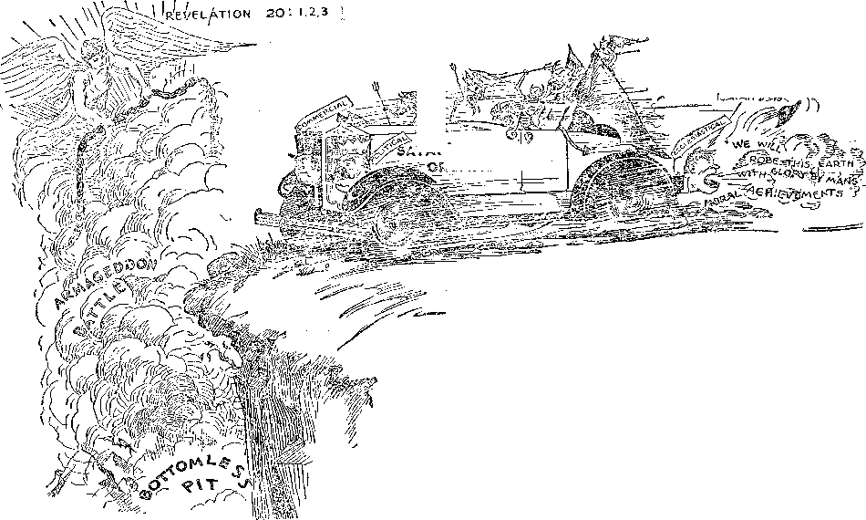
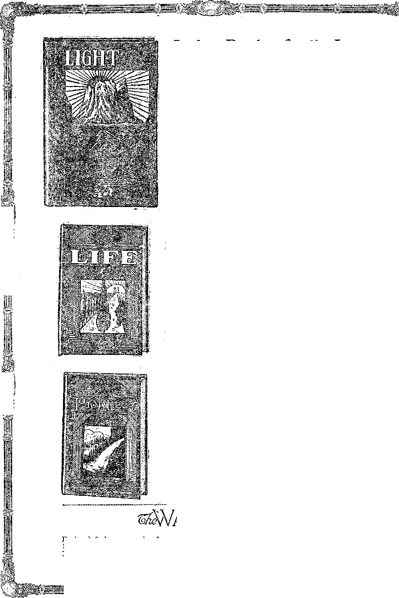

A JOURNAL OF FACT HOPE AND- COURAGE
lUHiHHimmittmsir' A '■'ummsHmiHiHim
x V- d>
RESISTING x
WORLD’S MENTAL bi. jOWN
OUT OF THE WRECK
RESPONSIBILITY FOR
UNEMPLOYMENT
DIVINE PROPHECY
Full text of an address by Judge Butherford, broadcast in WATCHTOWER national chain program
mHmmmimHmmsmmmmHmiiiisHHmmiomiiiiMi
every other
WEDNESDAY
five cents a copy one dollar a year Canada & Foreign 1.25
Vol. XII - No. 291 -
N ovember 12,19 3 0 .
LABOR AND ECONOMICS
POLITICAL—DOMESTIC AND FOREIGN
Greatest Economic Crisis Ever Known......117
Near East Aristocracy Changing 117
Broadcasting Bolshevism
over Europe ...... 117
How to Get Twice as Much Money 119
No More Conscientious Objectors 120
SOCIAL AND EDUCATIONAL
The World’s Mental Breakdown 102
Out of the Wreck.....117
Uncle Sam Not Eating Wheat . 117
Religion Excluded from China . 118
The Raids at Folkstone . . . 118
Soviet Confiscates Bibles . . . 118
Fifty Million Bibles a Year . . 118
Cost of a Loaf of Bread . . . 119
Genesis of the Anti-Saloon League ........126
MANUFACTURING AND MINING
Russia’s Astonishing Development 119
HOME AND HEALTH
Sterilization of the Unfit , .
The Helpless Serum Purveyors
Easy Way to Cure High Blood
Pressure ..... .
116
119
126
TRAVEL AND MISCELLANY
Barbarisms in South China . . 117
Independence of South Africa . 119
Cuenca’s Chamber of Horrors . 119
Russia Preparing New World War 120
Erratum...... 120
FINANCE—COMMERCE—TRANSPORTATION
Traffic Instructions in Tokio . 116
American Aviatioi Now Leads . 117
Still Heaping Treasure Together 117
Deposits and Cash.....118
The Kara Sea Fleet .... 118
The Dairymen’s League . . . 120
RELIGION AND PHILOSOPHY
Resisting the- Truth in
Montpelier, Indiana Payments in Kind . . Divine Prophecy . . . The Responsibility for
Unemployment . .
99
Published every other Wednesday at 117 Adams Street, Brooklyn, N. Y.} TJ. S. A., by WOODWORTH, KNORR & MARTIN
Copartners and Proprietors Address: n't Adams Street, Brooklyn, A. F., U, 8. A. CLAYTON J. WOODWORTH .. Editor ROBERT J. MARTIN . . Business Manager NATHAN H. KNORR.. Secretary and Treasurer
Five Cents a Copy—$1.00 a Year Make Remittances to THN GOLDEN AGE Notice to Siil)scri'bers-: Bor your own safety, remit by postal or express money order. We do not. as a rule, send acknowledgment of a renewal or a new subscription. Renewal blank (carrying notice of expiration) is sent with the journal one month before the subscription expires. Change of address, when requested, may be expected to appear on address label Nvithin one month.
Translations published in Finnish, German, Norwegian, Polish, and Swedish.
Offices in Other Countries
British.............34 Craven Terrace, London, W. 2, England
Canadian ........... 40 Irwin Avenue, Toronto 5, Ontario. Canada Australasian ....... 7 Beresford Rd., Strathhcld, N. S. W., Australia South Africa............G Belie Street, Cape Town, South Africa
Entered as second-class matter at Brooklyn, N.'Y,, under the Act of March 3, 1870?
Volume XII Brooklyn, N. Y., Wednesday, November 12, 1930 Number 2S1
Resisting the Truth in Montpelier, Indiana
'Wow as Jannes and Jambres withstood Moses, so do these also resist the truth: men of corrupt MINDS, of no judgment concerning the faith. But they shall proceed no further: for their folly
. shall be manifest unto all men, as theirs also was J—2 Tim. 3:8, 9, margin.
THE Lord’s true people are the most inoffensive people on earth. It is not pleasant for them to be compelled to refer directly to the shortcomings of others, and they never do so unless conditions are such that there seems no other way open if the truth, God’s own truth, as plainly set down in the Bible, is to have its proper standing in a community.
ISAIAH 0
The Blind Leading the Bund
It was no pleasure for Jesus to refer to the . ‘Ministerial Association’ of Jerusalem as hypocrites, whited sepulchres full of dead men’s bones, men who are lovers of their own selves, men who took away the key of knowledge from the people, and would neither go into the kingdom of heaven themselves nor permit others to enter in, yet, on emergency, he did not hesitate to do his full duty in this regard.
A summary of his terrible castigations of Jerusalem’s official Board of Hypocrisy can be found in Judge Rutherford’s latest book, Light, Book Two, under the heading “Hypocrisy Exposed”. We unreservedly recommend this book to the people of Montpelier, Indiana.
ATAN'S , RGANIZATION
Everybody knows where the Ministerial Association of Montpelier, Indiana, stood during the World War. It stood, firmly and squarely, on the Devil’s side, on the side of murdering one’s enemies instead of loving them. It did not teach, and dared not teach, Love your enemies, resist not evil, blessed are the peacemakers, put up thy sword into its sheath, do to others as ye would that they should do to you, our weapons are not carnal weapons, if thine enemy hunger feed him, etc., etc., or, in other words, the simplest and plainest tenets of Christianity, which is to love your neighbor as yourself.
It stood where every other Ministerial Association of America stood, and where every Ministerial Association of Germany and Great Britain stood. It stood as the sure and dependable tool of the Devil himself in what has
turned out to be the worst curse the world has ever seen, the World War, which has brought sorrow to everybody and good to nobody.
It does not surprise us, therefore, when we find in the Montpelier Herald, of September 29, the following libelous item:
Issue Warning Against Books City Ministerial Association Issues Paper Signed by AU Ministers
A warning against the buying of alleged Bible Study books from a house-to-house canvasser, was issued this morning by the ministers of the city, at the regular meeting of the Ministerial Association held in the Methodist church at ten o’clock.
The warning was issued following the appearance in this city, of a lady canvasser who is selling publications which the local ministers claim were suspended by the United States government during the war for presenting dangerous propaganda to the people.
The statement as signed by the ministers is as follows:
“There is a lady in town canvassing from house to house, selling what she claims to be Bible study books that are said to be written by a Judge Rutherford, and claiming to make a thorough explanation of all Biblical revelation.
“We think it is due the public that we, the undersigned ministers, state that Judge Rutherford is the successor of Pastor Russell and his millennial dawn theories that have long since been discredited by
Bible students and religious educators and thinking people.
“During the recent world war these publications .....
were suspended by the United States government for .
presenting dangerous propaganda to the people.
“Signed: .........
“William H. Law, Pres., “J. 11. Stelle, ............
“A. E. Chastain, q yay “Chas. H. Broughman,.........._
5 ‘ Gaston R. Coyner,
Secretary.’’ .....
The devotional service of the meeting this morning, was led by the president, the Reverend W. II. Law. ? The Reverend Gaston R. Coyner, pastor of the Naz-arene, was elected secretary. The ministers present gave a summary of their work yesterday, each report- ••• = ing an increase in attendance at services. After discussing plans for the welfare -of the churches, the ....... ;
meeting adjourned to meet at the call of the president some time in November.
Under these circumstances it is a peculiar pleasure to us to give our readers the benefit of seeing a letter written by Judge Rutherford to William IL Law, president of the Montpelier Ministerial Association. It speaks the truth in love, but it speaks it plainly. The Golden Age endorses every word:
.. Oct. 7, 1930.
William II. Law, President,
Montpelier, Indiana.
Sib :
In its issue of September 29, 1930, the Montpelier Herald publishes a paper which purports to be signed by yourself, J. R. Stelle, A. E. Chastain, Chas. H. Broughman, and Gaston R. Coyner, representing yourselves to be members of the Ministerial Association of that town. Manifestly your motive in issuing this statement is to prevent the people from obtaining and reading certain books written by myself, and which are devoted entirely to Bible instruction. It is hardly necessary for me to say that if your statement is untrue, then you are guilty of libel for such publication. You have misled the newspaper man to publish a libel which also makes him liable.
From your published statement I quote paragraphs as follows: “Thore is a lady in town canvassing from house to house, selling what she claims to be Bible study books that are said to be written by a Judge Rutherford, and claiming to make a thorough explanation of all Biblical revelation.” “During the recent world war these publications were suspended by the United States government for presenting-dangerous propaganda to the people.”
The language of the paragraph last above quoted is grossly false and libelous, and is prima facie evidence of malicious intent on your part. The first book written by me was. written and published in 1921, three years after the world war ended, and the books dealing with Revelation which you specifically mention were written and published in 1930. The facts therefore show you have published a deliberate lie, and that you have done so with an intent to do injury to others.
For your information I might say that the total number of books that I have written and which are now in the hands of the people amount to many millions, and therefore there are millions of people in the United States who will at once know when they read your statement, that you are lying and that your purpose is to do injury to myself and to the people.
Furthermore, you have falsely stated that these books are propaganda. They are not propaganda, because they set forth the view of no man nor attempt to propagate any doctrines of man. Every point therein is supported by the facts, and particularly by the Bible, which enables the people to find in the Bible the truths they desire to know. Jehovah God sent Jesus to earth to be a witness to the truth, and Jesus faithfully gave that testimony amidst persecution similar to what you now would inflict upon those who serve the Lord. (John 18:37) The clergy among the Jews accused Jesus of propaganda and sedition, and refused to believe the truth that he told. Therefore Jesus said to them: “But now ye seek to kill me, a man that hath told you the truth which I have heard of God. . . . Why do ye not understand my speech? Even because ye cannot hear my word. Ye are of your father the devil, and the lusts of your father will ye do. He was a murderer from the beginning, and abode not in the truth, because there is no truth in him. When he speaketh a lie, he speaketh of his own: for he is a liar, and the father of it.” (John 8: 40, 43, 44) You put yourselves in the same class with these Pharisees, and prove by your words that you are of your father the Devil and you continue to maintain his reputation for promulgating lies.
You are not interested in helping the people to find out the truth. If you were, then you would encourage them to study the Bible and use the books that explain the Bible. If you found anything in these books contrary to the Bible you would point it out that it is against God’s Word, and not try to make it appear that it is against the government. You know nothing about the Bible yourselves and you vrant to keep the people blind to the Bible truths. Therefore you put yourselves in the same class again with the Pharisees of whom Jesus said: “Let them alone: they be leaders of the blind. And if the blind lead the blind, both shall fall into the ditch.” (Matt. 15:14) The people are now letting you alone and staying away from your churches, and you are unable to mislead them much longer, and that makes you angry.
You pose before the people as representatives of God and of Christ, and at the same time ally yourselves with the polities of this world, which the Word of God denounces. (Jas. 4:4; 2 Cor. 4:3, 4) You pose before the people as being interested in their spiritual welfare, and yet your words and course of action show that you are more interested in cooperating with a class of men who force a law such as prohibition upon the people and which opens the door to criminals as never before. If you were really interested in God’s kingdom and what the Scriptures teach, you would tell the people that all the crime resulting from the various bootlegging schemes and other crimes are due to the ■wicked influence of the Devil, and that the oppression of the people is due to the Devil’s influence, and that God’s kingdom is the only remedy. You are not doing that. You do not instruct the people concerning the Bible and its teachings of God’s kingdom.
The Lord hates a hypocrite, and he denounces in the 23d chapter of Matthew such men as pose before the people as representing God, and at the same time misrepresent him. You are willing to make yourselves guilty of slanderous speech and libelous words against a man or men who are trying to help the people, because of a selfish reason on your part. Y’ou think if the people know the truth that is taught in the Bible they will stay away from your congregations, and no more will you be able to make your living by taking their dimes while talking politics and other things that have nothing to do with their eternal welfare.
If the ministers of the United States had told the people the truth concerning God and His kingdom, there would be far less crime than today and far less discontent. The people are suffering great want and oppression, and yet there is not a clergyman in any of the denominations who busies himself in teaching the people how their relief from these oppressions can come and will come through God’s kingdom, and it alone.
Of course, you gentlemen are at liberty to believe what you please, and take your' own course, but you ought to cease calling yourselves clergymen and posing as representatives of the Lord when you deliberately misrepresent His Word. The time is not far distant when the people’s eyes will be opened to the fact that you have misrepresented God, and Christ and His kingdom, and kept them in blindness. It would be far better if you would encourage the people to read books that are published on the Bible, and then meet with them and study, and whatsoever set forth therein that is contrary to the Word of God, point it out to them. That would be more consistent than engaging in libelous accusation of another, when you claim to be teachers of the Bible.
You call yourselves the shepherd of the flock, and yet you have let the flock starve for want of the truth. For your enlightenment I call your attention to the Word of God that is applied to men of your class and set forth in Ezekiel chapter 34, verses 2 to 10, inclusive.
If you gentlemen that signed that paper were honest and fair, you would sign one more and have it published, and admit to the public that your statement was untrue and that you were wrong, and suggest that the people inform themselves by reading the books and see whether or not they teach the Word of God. If you would let the politics of the country alone and devote yourselves honestly and earnestly to the study of God’s Word, and help the people, you would do some good. But it seems from your course of action you are practically beyond all recovery. The Lord will give you attention in due season.
Respectfully,
J. F. Rutherford.
TIGERS do not kill tigers, lions do not kill lions, hyenas do not kill hyenas, and boa constrictors do not kill boa constrictors. It is not till one comes to creatures created in the image and likeness of God, and that have fallen from that image, that one finds the mentally ill in any considerable numbers, man is mentally ill. It accounts for the foolish things he believes and practices. Only a mentally ill creature would take the life of his own kind.
In 1850 the census showed that in the United States there were 15,610 insane, while in 1923 there were 267,617 such persons then actually patients in asylums. It is estimated that by 1970 there will be 950,000 thus confined, or about 635 per 100,000 of population.
In New York state one out of every twenty-two persons is confined to a mental institution at some time during his or her life. At present the chance of a young person fifteen years of age of developing an incapacitating mental disorder, whether sent to a mental hospital for insanity or not, is about that of one to ten.
In examining the citizenry of the nation at the time of the World War it was found that there were more men with mental diseases outside the hospitals than there ’were in the hospitals. These results were almost the same in Massachusetts as in New York state. One-half of the insane patients in New York insane asylums were born in Europe.
Taking the country as a whole, insanity and mental disorders are increasing four times as fast as the population. One-half of the hospital beds in the United States are for mental cases, and the beds for such cases are increasing more rapidly than for all other classes put together. Some of this increase is due to the increased attention being given to mental disorders.
The same phenomena which confront the United States are observable in England, Wales, Germany, Australia, France and all other countries involved in the World War. It is stated that at the rate at which insanity-is increasing in the United States there would not 'be a sane man or woman left in North America in two hundred years,, and that in fifty years the burden of supporting the insane and the feeble-minded would be too great for the sane to bear. Mental diseases are increasing in all parts of the world.
A Test of Abnormality
One of the simplest of the tests suggested to determine abnormality is to ask a person to name a number between five and twelve, and a color. If the number is seven and the color is blue the person is normal. The theory is that seven is a supposedly lucky number, and blue a popular color. Sixteen out of twenty persons passed this test. That looks like too simple a test to be worth much, but we give it for what it is worth.
Another test is to make a list of the fifty men and women you know best and then carefully check over the list to see how many of them, to your personal knowledge, have at one time or another had a nervous breakdown, a psychoneurotie reaction to the vicissitudes of life, or, in other words, a mental disease.
In the World War psycho-neuroses constituted a major problem on both sides of the line. Twenty percent of the soldiers discharged for disability from the British army had one or another of the mental diseases termed “shell shock’’, neurasthenia or war neurosis. It is claimed that at least 90 percent of us are mentally defective.
Each year in America one person out of every forty-eight homes passes through the courts into correctional institutions. At least half of these are mentally disordered, mentally deficient or unstable individuals. America has seventeen thousand suicides a year. At least ten thousand of these cases are due to well defined mental disorders. More than a third of the hospital patients cared for by the Veterans’ Bureau are mental or nervous cases. What a commentary on war!
When men are disillusioned regarding life they take it harder than the women, the practical half of the human family. In both the single and widowed groups the males are in larger numbers for first admission into mental institutions. But the men recover more quickly. Patients with alcoholic insanity improve rapidly, and patients with general paralysis die quickly; so the average duration of hospital life is less for males than for females. .
Like the prisons, the asylums for the insane are overcrowded. In 1926 New York state expended five million dollars improving its asylums, and within three years thereafter they were overcrowded. California has had a like experience.
The Seven Times of Madness
Nebuchadnezzar, in his day, represented Gentile rule in the earth. He was insane for seven years. Those seven years represent the seven Gentile times, the period from the overthrow of King Zedekiah, 606 B, C., down to the outbreak of the World War, which legally ended Gentile rule and almost ended it actually.
The condition of affairs during those 2,520 years proves that the rulers have been madmen. What sane persons believe that the common people of any land desire to murder their fellows or to be murdered by them? And yet they have given their support to a set of rulers that have brought on one terrible era of bloodshed after another.
■ Other countries besides Germany have suffered because of the inordinately vain Kaiser Wilhelm II. His father and his grandfather ■were sane, but his earlier ancestors showed all the evidence of minds that were out of balance. Frederick I was a spendthrift and tyrant; Frederick William I was bloodthirsty and tyrannical, and hated his own son; Frederick the Great was a human butcher; the next two generations were weak-minded fanatics, and William IV died insane.
Before the Kaiser’s birth his mother, then but eighteen years of age, was under a doctor’s care for nervous troubles and in a pitiable condition. The child was at first thought to have been born dead; it is almost a pity that he had not been.
But of what can America boast as respects sanity? There was every reason that sanity could urge why she should have stayed out of the war. America was in no more possible danger of an invasion from the Germans than it was from the Patagonians.
But America, had a ruler (a servant he was, but he thought himself a ruler) that was of the same general type as the Kaiser, vain, egotistical, heady; and as he thought that the lives, fortunes, and influence for good of the American people were all at stake, they were herded into a war against their own interests and to the ruin of all except the patrioteers.
When crazy rulers are not planning the ruin of the people by driving them into some war, they are planning their ruin economically. The avowed purpose of politicians is to sustain a system which hands over most of the wealth to those who do no useful work, and to keep that class in luxury while the workers receive a bare subsistence. What could be crazier?
Causes of Insanity
At the top of the list of the causes of insanity we put the influence of the demons, evil spirits. A large proportion of the insane are in their present condition because the 'demons have taken advantage of some injury or weakness in their mental structures.
The Scriptures, and the Son of God Himself, repeatedly charge the demons with causing breakdowns of the human mind, and of the body as well. See the account of dumbness, in Matthew 9:32; of blindness and dumbness, in Matthew 12:22; of epilepsy, in Mark 9:17-27; of the incident at Gadara, in Mark 5:1-15; of the failure of the apostles, in Matthew 17:14-21; and of the clairvoyant of Thyatira, in Acts 16:16-18.
The Scriptures link the demons with. Armageddon, going forth To gather the kings of the whole earth to the battle of that great day of God Almighty’. (Rev. 16:14-) They charge Satan’s entire government and management of the affairs of earth as being “the habitation of devils, and the hold of every foul spirit”.—Rev. 18:2.
A way in which demons get in contact with humans is through mediums, who constantly advertise in the papers as clairvoyants, healers, consulters, and revealers of hidden things. Many brainy people, many talented personages, are among spiritism’s devotees, not knowing the true explanation of its phenomena.
Too much attention to the operation of the mind is a cause of insanity. When one spends too much time pondering upon the operations of his own mind he is in a fair way to lose control of it. Manual dexterity does not come from gazing at one’s hands or poring over one’s anatomy, but from paying close attention to the things in hand. It is the same way with the mind.
Confusion of the Mind Doctors
The mind doctors have made up a list of kinds of insanity and causes of insanity that makes one’s head ache to look at it. Some of the kinds are: ■'
general paresis
feeble-mindedness
epilepsy
alcoholic psychosis
dipsomania
delirium tremens
paranoia
lycanthropy
alcoholic hallucinasis encephalopsychosis transitory psychosis
old age psychosis dementia praecox neurosis melancholia
abnormal irritability psych op athic personality satyriasis
nymphomania
manic depressive psychosis.
Tne causes are as varied as the kinds of insanity m which they result. Under this head
are listed:
exclusiveness discouragement suspicion unsoeiability antisocial attitude cocaine fear
anxiety
selfishness
worry distrust incompatibility syphilis
blows on head joy
grief
laziness discontent misinterpretation alcoholism
opium fevers
anger
temperamentalism overconcentration
senility asthma diabetes toothache influenza pneumonia ,
carbon monoxide enteric fever .
autosuggestion unemployment sore throat skin disease association with insane load poison benzol dysentery adolescence focal infections hay fever loss of hearing malaria typhoid fever carbon bisulphid gasoline thirst
. Emil Kraepelin, one of the most conspicuous figures in modern psychiatry (treatment of the mind), who devoted his lifetime to the study of mental disorders and examined thousands of patients, gave as his final judgment that the causes of dementia praseox (deterioration of mind in early life) are at the present time wrapped in impenetrable darkness, and that this is generally true of other forms of insanity.
Dr. G. B. Cruickshanks, government inspector in insanity for twenty years, said: “There is no line of demarcation between sanity and insanity. Some people are insane in the opinion of others, and yet might be regarded by ths vast majority as being in full possession of their senses. There is no real distinction between sanity and insanity. Some of our most valuable citizens are cranks and yet their work in life is very useful.”
Indications of Mental Disorder
When it comes to the visible indications of mental disorder there is less disagreement. If a person cannot get along with other people he is mentally ill. Nobody has a mental breakdown while he is getting on smoothly with other people. When Saul became insane he wanted to kill David. The fact is that a demon had possession of his mind.
Dodging something disagreeable may bring on a headache, a sign of mental disorder. If the person had faced the difficulty courageously there would have been no headache. A pain in the back may follow discouragement, another mental disorder. Sleeplessness may follow as a result of worry, another mental disorder.
Stealing indicates mental disorder, and so does the fatigue which grows out of laziness. Lynchings are contagious mental disorders, where demons use a leader to override the sense ....... of a crowd and turn it into a mob. Fear lessens the blood flow and is a cause and evidence of insanity.
The mind has such a powerful influence over the body that an author writing of an Arctic blizzard grew so cold in midsummer that he was ......forced to start a fire in the grate. Many people grow colder immediately when they find no heat in a radiator after touching it and finding f that there is no heat in it.
The scribbling of weird and ugly faces on paper indicates a troubled state of mind, so says a teacher of graphology. Paranoia or monomania is a delusion which takes the form of self-importanee or imaginary persecution and ........ is considered one of the most dangerous forms of insanity. The deluded one is sane on all subloots except that he becomes convinced that an employer, a friend or a relative is plotting ■ against him. When his load becomes mentally intolerable there is a tragedy. Moral: Stop thinking about yourself. A sense of humor is a big helo just here.
_ . PFhat the PsrjcktaMst Looks For
- A nerve specialist inquires whether one’s gait ......is regular or jerky, whether his speech is controlled or breathless, and whether his pronunelation is clear or jumbled. He notes a loss of the sense of humor, a failing memory, a desire ......... to brood alone, inability to concentrate, muddy thinking, a trembling near the pit of the stoin-ach, a series of psychic experiences, a whirling ";" sensation or a sudden change of religious ideas
as evidences of mental disorder. The chances are that the patient is not eating enough fruit and vegetables, and not working industriously. A. Melancholia, or manic depressive insanity, -■ constitutes 70 to 80 percent of all mental
_ disease. More than half of these eases terminate in complete recovery. Dementia prsecox (mental decay) is an ailment of university students and often results in suicide. *
It is noted that the insane cannot act in concert. There is no teamwork. People can help to keep themselves sane by training themselves to join heartily in some good cause and submerge their own individualities in it for the good of the cause. The very best cause of all in which to do this is the Lord’s cause, and it provides plenty of opportunities for service and for selfeffacement.
When insanity develops it commonly takes the form of hatred of those nearest and dearest. Confinement with the insane tends to make doctors, nurses and attendants insane, and tends to keep insane those who are already afflicted. The quiet and orderly routine is an offset to this tendency.
The total incidence of insanity dithers but slightly in the two sexes. The percentage of insanity is greater among the unmarried than the married. The focal infection theory of insanity is now pretty generally discredited. It belongs to the days of popular removal of any surplus parts of the body which could be hacked off or chopped out.
Some hhlssoneeptions
The National Committee for Mental Hygiene lists some misconceptions respecting insanity. These are that it conies suddenly, is incurable and is a disgrace, that nobody can guard against it, and that admission to an asylum rings down the curtain on the life of the victim.
The Committee also regards with disapproval the theories that emotional shock, loss of loved ones, disappointment in love, or other misfortunes cause insanity, or that it is a specific disease entity, or that a nervous breakdown is a disease of the nerves.
The Committee holds that insanity develops gradually, that it is a condition no more to be ashamed of than a broken limb, that asylums today are being turned into hospitals from which 25 to 40 percent are discharged fully recovered or improved, that mental illness caused by personal misfortunes or tragedies are merely the climactic features of other causes of insanity which have been working for some time, probably unnoticed and unheeded. The way to be prepared for such climaxes is to meet the lesser evils with fortitude as they present themselves in everyday life.
It is an error that the insane cannot reason, and also that the mind does not function well when it is fatigued. The popular conception that there is a connection between lunacy and the shining of luna, the moon, is probably without foundation. The fact that this idea is widespread all over darkest Africa and the Far East suggests that it is one more of Satan’s schemes to discredit the Creator, whose gift of the moon was intended to be and is a. blessing to all created things on this earth.
It is a misconception that insanity implies mental deficiency. Idiots, morons and imbeciles are not normally insane; nor are the aments, those poor creatures with bodies warped, twisted and distorted, with heads suggesting horses or dogs. A psychiatrist states that he has enjoyed brilliant discussions in two languages about intricate phases of scit nee with insane patients locked in the most violent wards, while an ament would have so few brain cells that he would starve to death at a table laden with food.
Demonism Exceedingly Common
Demonism was exceedingly common in Old Testament times, in the time of our Lord and of the apostles, and throughout the Dark Ages. It is common today all over Africa, Asia, Europe, South America and North America and the islands of the sea, and demonism breeds insanity and is a form of insanity, mental sickness.
A British social student made a visit to the Falkland Islands, off the tip of South America. While there a number of persons attacked with a kind of influenza committed suicide, all in the same way. At a certain point in the run of the disease the victim dashed from the house straight through the window, if that was nearer than the door, and ran in a direct line as fast as he could go until he suicided by running off a cliff or into the open ocean. This was evidently the work of demons.
A somewhat similar form of suicide occurs in Siberia, where the natives rush out into the snow and freeze to death. How this reminds one of the case cured by the Lord where the demon continually thrust the unfortunate victim into either the fire or the water, evidently trying to kill him.—Matt. 17:15.
The best way to keep out of demonism and out of mental sickness is to live as our Lord and the apostles lived and as they advised the church to live, engaged in doing and delighting to do the will of God as set down in His Word. The constructive message of God’s Kingdom is the sanest thing in the world today. The efforts to uphold Satan’s empire are insane.
The happiest way to live is to concentrate on first one thing and then another. Perhaps the management of the International Bible Students recognize this principle when they inaugurate their drives in the placing of literature. Variety gives spice and zest to life. The same work is helpful toward sanity because it drives fear out of one’s life, and fear is a step toward mental sickness.
Employment Helps to Sanity
Useful employment, especially if there is some variety to it, helps toward sanity. No Bible Student today can complain that he can find nothing to do. There are millions of people to be called on and revisited with the message of the Kingdom. On the other hand those who have nothing to do are the most unhappy people in the world. Fear gnaws at their mental structures until, sooner or later, there is a collapse. The doctors wrho have thousands of the insane under their care notice that cases multiply more rapidly as the waves of unemployment come. Worry ovei’ the needs of one’s loved ones, due to lack of work on the part of the family breadwinner, may so fill the mind as to break down the mental balance.
The present condition of civilization, in which there is employment for neither man nor beast, but the machine does it all or nearly all, is the final phase of Satan’s empire; and one of the worst, because it means the physical and mental ruin of his subjects. .
The idiotic course of periodically killing off the finest youths in wars has done much to weaken humanity intellectually. The ones that would make the sanest fathers are deprived of parenthood and of life. The culls are left to fill the world with their own kind, and as the intellectually capable refuse to bear children the course of mankind is ever downward.
There is no evidence that the brain of man today is equal to that of the man of ancient Greece. If Aristotle or Socrates had had access to the facts now available in books their use of those facts would far outshine the achievements of our contemporaries; and when it comes to a knowledge and use of the Scriptures, every Bible Student today knows that our wise men are mere babies, prattlers.
Size of brain means nothing as respects sanity. The brain of Anatole France, genius, philosopher, scholar, was only three-fourths of that of the normal weight, 48 ounces. The largest brain ever discovered, according to De Quatrefages, belonged to a lunatic. Youth means nothing as respects sanity. The average age of all the insane is but 42, just at a time when they should be doing their best work.
Education means little and opportunity means little as respects sanity. When President Wilson lost control of himself at the mention of Theodore Roosevelt’s name, Lloyd George is said to have remarked to his secretary, “Fancy any man taking another man so seriously.” Irritability and loss of temper are evidences of mental illness.
Ability to play games is not a proof of sanity. After his execution it transpired that a murderer who was undoubtedly insane was found guilty because it leaked out to the jury that he was the best card-player in the jail where he was confined awaiting trial. Yet card-playing is one of the most common diversions of patients in asylums.
A feeling of self-importance is not a proof of sanity. It is the reverse. In one of the asylums often visited by an investigator of these subjects was a criminal patient who believed he was the president of the United States. He was rational and intelligent on every other subject, ■with as keen perception and calm judgment as any intelligent man outside, but a hint that he was not the president of whom the papers were speaking transformed him immediately into a gibbering sophist.
Genius and Temperament
Dr. E. S. Southard, an eminent alienist from Boston, president of the American Mental and Psychical Association, in an address at Philadelphia asserted that every form of neurosis may be classified as a, form of insanity, that every “temperamental” person is really insane, and that from this point of view all mankind are unbalanced.
Musicians, painters, and poets, all bear testimony to the fact that talent, genius, and insanity are closely allied. The craze for paintings by cubists and futurists was insanity; many of the modern dances and the music which accompanies them are the work of disordered minds.
When it comes to authors, we see the eccentricities of Francis Bret Harte finding hereditary expression in his daughter, Jessamy Harte Steel, until her career is ended by confinement in the St. Lawrence Hospital for the Insane.
There was mental unsoundness on both sides of the poet Cowper’s ancestry; and he himself suffered from hallucinations, melancholia and suicidal mania, spending over a year in an asylum. Shelley had an insane ancestry, was subject to vivid hallucinations, and at school was known as “Mad Shelley”. .
Charles Lamb, at the age of twenty, was committed to an asylum; and his sister Mary while insane murdered her mother. There was insanity in Wordsworth’s family. His sister Dorothy, of his own poetical temperament, became hopelessly insane. Southey came of insane stock on his mother’s side.
Coleridge’s family had strongly marked insane tendencies: his father was eccentric and his mother simple-minded. Sir Walter Scott’s family was permeated with nerve disorders and dementia on both sides. Byron’s mother was unbalanced, and his maternal grandfather suffered from melancholia and finally committed suicide. His father also committed suicide while insane.
It Is Good to Be of the Common People
It is good to be of the common people. When one is walking with his feet on the ground he has not so far to fall as when he is walking on stilts. Those that are great, or thought to be great, are on the stilts. Kraft-Ebing, a noted specialist on insanity, made the observation that “more people of great genius exhibit manifestations of insanity than do persons of ordinary mentality”.
Some illustrations of this are found in the fact that Goethe, the German poet, and Benvenuto Cellini, the noted Italian artist, were both quite mad at times. Cardinal Richelieu used to caper about his room imitating a horse, and Lord Beaconsfield used to shout aloud at times to make sure that he was alive.
If all the machinery in the world were to become in a moment inoperative the only people that would be able to live are the Esquimaux who make everything they use, and the villagers who are in the habit of providing almost all of their own tools and equipment. Most capitalists would starve.
The labor turnover in a certain factory was far above what it should have been. A psychiatrist was called in. He made a careful study of the facts and showed that the ones who left were the bright ones. He advised the manufacturer to hire commonplace men and train them. They would be more likely to remain sane.
If the plans of the Russians mature there will sometime be a fund of information regarding brains. They purpose to keep the brains of celebrities in glass bowls, -with plates telling whose brain is inside and what the brain was noted for in life.
It would be interesting to see the brain of Magliabecchi, the man who never forgot anything he had ever read, or the two brains mentioned by Mr. J. A. Hadfield, of London University. One of these was of a man who remembered the details of a fire which happened when he was a baby of eight months, and the other was of a woman who remembered what happened a few minutes after her birth.
Noise and Worry '
Anything that tears steadily at the nerves is a cause of mental illness, and for that reason the rate of insanity is much higher in cities than in the rural districts. Unemployment we have already touched on, but another thing about the city that makes it hard on the nerves is noise. Concerning this, Dr. Mam", trustee of the Sanitary District of Chicago, said:
Unnecessary noises are the bane of metropolitan existence. They murder sleep, assassinate mental rest, shatter our nerves, and indirectly shorten our lives. Factory whistles screeching three times a day, in addition to steamboat, tug-boat and locomotive whistles, the grinding, crunching, munching of flat-wheeled street-cars and elevated trains, the shrill sirens of auto trucks, the cannonade of exploding motors, venders of vegetables crying their song of sale, boys screaming extra papers, barking dogs, howling cats, rattling milkwagons, the untimely sounding of guns, church bells, hand organs and barrel organs, the discordant piano and whining phonograph, the radio loud speaker, the amateur trombone, the saxophone in practice. Noise! It increases the death rate by murdering sleep. It destroys the vital and recuperative powers of the sick. It increases deafness. It helps indirectly to fill our insane asylums. There is little doubt but that many nervous wrecks are created every year by the incessant din. and clamor to which the average city resident is continually subjected.
The war was a direct cause of insanity. There are 100,000 mentally deranged in Paris, mostly from that cause; and from the American forces alone 72,000 are reported by the American Legion as deranged. Consequently, the total number on all fronts and in all sides of the conflict must be nearly or quite half a million.
Then the war was an indirect cause of insanity to great numbers who found no way of reconciling the conflicting voices of conscience, loyalty, duty, self-preservation, patriotism, Christianity, etc., presented to them.
Moral courage makes for sanity. The man who takes a stand, one way or the other, and abides by what he believes to be right, will endure the reverses of life with a courage and success that ■will seem almost supernatural. Children should be trained to face unpleasant situations and to make the best of them, but not to worry about them.
There is on record a credible case of a young woman happily married who so feared motherhood that she actually induced her husband to take her life. How much better for them both to have spared both lives and added another happy little new face to greet the blessings here below.
Fear of insanity has caused many suicides and murders, and fear of military service or fear of the sufferings of the conscientious objector has caused insanity, which is worse than either of the dread alternatives.
> The evading of any responsibility tends toward insanity. The more hopelessly insane a person is, the more he acts like an infant, assuming that whatever he wishes should be provided for him by others because he desires it. The possession of a disposition to wish to get along without work is therefore an evidence of insanity. It indicates the neurotic mind. The desire to work, to produce, so that one may have for himself and have to give to others, is an evidence of sanity. The idle rich are all on the road to insanity, and many of them are actually insane.
Too Much Excitement
The movie theaters have been blamed for some of the increase in insanity, and probably not without reason. Every form of mental strain is depicted by the actors, and this cannot fail to have some effect upon those who are suffering mentally or are predisposed to insanity.
Much insanity is caused by poisons of various kinds undermining the brain structure through the blood stream. Syphilis is deadly to the brain structure; and there is hardly a person who does not have it in his blood, either bovine syphilis, derived from vaccination, or the real thing obtained from our tainted (not sainted) ancestors.
There is too much excitement in American universities and in American business. The proof of this statement lies in the fact that fully one-half of our university graduates have suffered from threatened or actual nervous breakdowns, and fully one-third of our metropolitan business men. These facts have led Europeans to wonder if America will not soon become the world’s greatest madhouse.
High-speed automobiles, rushing hither and thither in fabulous numbers and at excessive speed, are doing their part toward holding us in line for the. doubtful he 1 t i - r >ed. A recent investigation of f i a e at an insane asylum showed thar one-mird of them held drivers’ licenses.
Occasionally we have a terrible wreck where some railroad engineer goes insane while at his post. The same thing might happen in an airplane. In France a railroad engineer and his fireman both went insane at the same time and ran their train past ten stations without stopping, finally coming into the terminal three-quarters of an hour ahead of time.
Present-day liquor is responsible for about one-fifth of the cases of insanity. Doctor Hall, chairman of the Insanity Commission of Cook County, Illinois, says on this subject:
There are two classes of alcoholic cases we are getting. There is a class of elderly persons who were accustomed to use a certain amount of liquor regularly. They were able to coordinate and to combat social, domestic and business worries. Then prohibition came, and they wore unable to obtain liquor regularly. When they did get it, it would be by the bottle. Not knowing when they would got more, they would drink it all at once. As a result they broke down mentally. The other class comprises the young, who got the unlabeled or moonshine whiskey. They drink all they can get, when they can get it. It, contains a large percentage of poison and works havoc with their minds. We had several eases of young doctors who wrote their own prescriptions, and got bad whiskey, which they drank to excess, resulting in their breakdown. It lias been necessary to commit several to an asylum for the insane.
The Effect of Diet
It is well known that there is a direct relationship between food and intelligence. The children of the well-to-do have a much better chance of becoming intelligent adults, simply because they are better fed. In the case of the poor, worry, fear or overwork sometimes develops ulcers of the stomach, resulting in nervous disorders and deranged mentalities.
Dr. II. P. Sidles, of Chicago, treats very interestingly, the whole subject of the effect of diet upon the mind. He says:
There are 20,000 new cases of dementia praaeox every year and all declare that it is on the increase. The mental phenomena vary with different cases. The physical phenomena prove that in a very large percent the patients have faulty digestion and faulty circulation as well as faulty elimination, and we will find in almost all of them a faulty respiration, very little if any abdominal breathing.
When we remember that we can retard or completely stop the respiration by pressing on any one of the branches of the sympathetic nerves that may be abnormal, either in the upper or lower orifices of the body,. then it is plain to us that if any one or more of these branches become involved so that the respiration is impeded and the sympathetic normal efficiency is reduced it is reasonable to say that the elimination and digestion as well as assimilation will be reduced. ■
Therefore in order to relieve one of these cases we must see to it that every branch must be inspected and eared for, so that we can have as nearly as possible normal functions. Why? Because normal functions must obtain if we are to have normal use of the cerebrospinal in all of its varied duties, and the highest of these is normal thought.
We must first eliminate the fact that there is no central lesion; when that is done it is admitted that the primary cause is not in the brain. Then we proceed to examine the functions. We find that we have in these cases as a rule either a low or a high blood pressure, a great majority being a low blood pressure. By persistent correcting of the different orifices the low blood pressure is gradually relieved, but sometimes very slowly.
We find also that these cases are suffering from varied degrees of auto-toxemia, so that auto-intoxication obtains a part or all the time. It is plain that as long as the patient’s auto-intoxication persists he will not be responsible, but when his toxemia is reduced below the state of intoxication he will then be responsible and his mental condition will be clear. But he will not be well until the toxemia is reduced to such an extent that the functions of the body will be normal each day, accompanied by normal blood and normal blood pressure. And more, all of the functions of the body must obtain until the strength of the entire body has been restored; and then will he have normal poise and normal thought.
The sympathetic system being first corrected, the diet carefully chosen, baths prescribed, we must, if possible, change the blood pressure. In these eases we have a venous status whether in high or low. blood pressure cases. In the low blood pressure cases the venous status is due mainly to a dilation of the veins, making it impossible for them to deliver the blood to the heart in sufficient quantities to be normal, and so we have a delayed circulation. . . . Additional excitement increases the high blood pressure of the high pressure cases and correspondingly doereases the blood pressure of the low blood pressure cases.
We will all admit that the poisons from the different tissues are being thrown into the veins and that if we can reduce the poisons by any means we will shorten the recovery of the patient.
Every now and again we find that the pressure goes up and down from some fault in somebody or the patient, and we find that anything that will cause loose movements of the bowels will upset our blood pressure. From this we learn lessons of great value which we must teach the patient, namely, that if he wishes to remain well he must forever abstain from all kinds of drugs that will cause loose discharges from his bowels; that if he has arrived at the happy medium where his thoughts are lucid and his poise is perfect under all occasions it is up to him to thus remain; that evidently his assimilation and elimination which take place in the millions of capillaries in all parts of his body which make it possible for him to live and carry on both physically and mentally are performing their functions normally, and if he obeys the laws of his body he will remain well; that the sickness he has suffered causing him to experience many abnormal thoughts and experience many abnormal perceptions have been physical.
We are now of the belief that dementia pweeox, so called, is produced by a faulty metabolism (changing food into protoplasm and carrying off waste) in the capillaries of the body, and is curable. - -
We must educate not only those immediately interested, but the great masses, to show them how they must live. A nation-wide education must be made against the habit of giving and prescribing all kinds of physic; for it is an impossibility to cure one of these cases if only one dose of cathartics of any kind is given. . . . Only by preventing insanity will we be doing our whole duty.
The Ductless Glands
Dr. Schlapp, professor of neuropathology at the Post-Graduate Medical School and Hospital, New ¥ork city (who is authority for the statement that twenty-five percent of the murders in this country were committed by insane persons who could have been cured by proper treatment in early stages), writes of the discoveries that have been made in recent years in endocrinopathy, or diseases due to improper working of the ductless glands of internal secretion. He says:
Twenty years ago the very term was unknown and the science of the ductless glands had no standing. Today our knowledge of the endoerines and their influence upon every function of the nervous system in man promises to revolutionize our whole understanding of human behavior. We know now that many men commit crimes because their thyroid glands or other glands are out of order. \Vo understand now that many unfortunate human creatures are unable to control themselves under temptation or in the face of other arousing stimuli because there is some derangement in the glands. It is now certain that these endocrine organs control the activities of our nerves altogether, including the workings of the. brain.
This means, of course, that science has brought human conduct or misconduct down to a physiological, or rather a chemical, basis. Men do not err because they are evil, but because of chemical disturbances in that marvelous and intricate machine, the human body. Just how far we want to go or can go with this statement at present is doubtful, but to some extent it must already be accepted and acted upon: for we are able to treat many criminals, to correct this chemical disturbance or abnormality and thereby to restore these sufferers to health and normality.
At least the well-informed among us know that many of the men who commit crimes are not responsible for their acts but are the victims of disease or pathological or chemical conditions. We know, also, that many men in our prisons should be in hospitals and sanitariums. And we know that a very large proportion of all the men sent to prison for felonious breaches of the law are sick men who can be cured of their illness. But we continue to treat these men as pariahs and monsters. We continue to torture them and cage.them and judge them according to stupid and obsolete standards.
Care of the Insane
About seven years ago we had a study of this subject in The Golden Age and referred to an asylum in the East where there are clean, carpeted halls, furnished with rockers and other chairs; where the walls are adorned with pictures and there are ferns and plants about; where the rooms for patients confined to their beds are perfectly ventilated, and the rooms themselves are large and cheerful; where the dining-room tables are covered with white linen, and adorned with ferns and flowers; where the patients were said to be served with care and attention to the wholesomeness of the food; where there are no handcuffs, no chains and no strait-jackets; where the nurses and attendants are of high class and well instructed in the care of their patients; and where, as a result, within nine months after their admission, 340 cases were discharged as cured out of total admissions of 400.
Well, we mentioned the name of this institution, and a subscriber sent his wife there, only to be disappointed, and to reproach us severely. Handling the insane is a difficult business; but it must be grappled with, and it seems to us that all the above conditions are essential if , .......real progress is to be made. Probably the ideal
institution for the care of the insane does not exist.
We mention as some of the things that have been found helpful, theatricals conducted by the patients, baths and mineral waters, exposure to sunlight, massage, modification of. diet, rest in bed, music, exercise and work. The Greeks used all these methods two thousand years ago.
The insane must be treated with kindness and respect. Coaxing works better with them than force. By listening to them carefully a way can often be found to point the way to a cure. They often remember well and are responsive to kindness and consideration with them in their follies. They should be allowed to write to whom they please, and as often as they please. The j . village model is better than the great institution, because more homelike.
Performances by paid clowns have been helpful. Friends and relatives should write to the insane and visit them, and treat them as sane. The insane cannot be argued with. A man bereft of reason adheres to an idea which to him seems absolutely correct, because he has been deprived of the means of detecting his r-.........error.
A beauty parlor is a useful accessory of the Utica Hospital. Visits of curiosity seekers should be stopped. These are as unpopular with the insane as they are with political or other prisoners. Ridicule or censure are resented as much by the insane as by the sane.
An attendant or a physician must be a big enough man to overlook the words and acts of the insane. 04* course some situations have to be dealt with by force, but mere -words or looks or acts which do not endanger the lives of others should be passed by as one ignores the irresponsible acts of childhood. To the insane words do not mean-what they usually do.
How Not to Care for Them
There were places in America where what were once human creatures were kept perfectly nude in cells in which there was no seat, bed, or even a pallet of straw. They were washed with the hose, as were their cells, and they were fed through holes under the doors.
There are places in America where an inexperienced and irresponsible person can secure work at once as an attendant upon the insane. A tramp was hired at $4.50 a week to care for an old man whose relatives were paying $85 a -week for his board and room at a private sanitarium.
There are places in America where the polite requests for a drink of water may be refused with, curses, followed by blows and kicks, if there is any retort.
There is a place in America where a refined woman, made mentally ill by childbirth, was fed so forcibly with a sharp-edged spoon that the roof of her mouth was broken through and her tonsils were cut off. She soon recovered from her temporary hallucination respecting food, and was as well as ever, but because she was a high-priced patient she was kept in the institution eight months after she was well, and the letters she wrote to her* husband were torn up before her eyes, meantime.
There was a time in America when hyoscyamine was injected hypodermically into the bodies of the insane, bringing about paralysis of the.body without affecting the activity of the mind. The victim cannot move a finger, or even move his tongue to moisten his lips. It may be that hyoscyamine is still used; we do not know, but we think that it is.
The Tarpeian Rock
The Romans used to fling their insane from the top of the Tarpeian rock. Nothing like this is done in America, but kicking and choking is so common that every book written by the insane who have recovered makes frequent mention of having witnessed or been a party to such scenes.
There are places in America where the insane have been subjected to terrible sufferings from the cold. To many people this form of torture is one of the worst. Would you think that anywhere an attendant would force a patient to bathe in water which had already been used for several others 1 It has been done.
112
Brooklyn, N. Y.
Would you think that because an ex-senator of the United States, an infirm old man, protested against the rude way he had been hustled across the hall, a cheap attendant would slap li ini with the open palm first on one cheek and then on another, with every evidence of passion? It is of record.
Would it seem credible that a new attendant, a young man studying to be a physician, starting out with high ideals as to how to treat the insane, would be taunted with cowardice by older attendants until lie finally knocked down an inoffensive man for refusing to stop his prattle at his command, and thereafter assaulted patients right and left?
At a public investigation in Kentucky an attendant said: “If when I came here anyone had told me I would be guilty of striking patients I would have called him crazy himself; but now I take delight in punching hell out of them.” Jiu jitsu is often used by attendants.
Caring for the Old Senator -
There was a time when the eloquence of the aged man above mentioned was the pride of the senate chamber and his dinners and receptions were the envy of all Washington. But now he ate his breakfast on a table without any cloth, which table was greasy and slimy. The food was brought from the main building nearly cold, because uncovered. The knives and forks had not been scoured for months; their handles were sticky and their blades rusty and filthy beyond description.
The woman who supplied some of this data and has since regained her reason had the delusion that her food was alive and consisted of creeping, squirming vermin of the most disgusting kind. She regained her reason, but still remembers with horror hove she felt when her arms were held behind her back and she was forcibly compelled to swallow the liquids poured into her throat. She thinks another way would have been better.
The mania of a poor man was that a fellow patient had stolen his stomach. He talked about it constantly and because of so doing was belabored with fists, broomhandles and a heavy bunch of keys, and was kicked and choked over a period of five years until he died. He was a man of sixty. No doubt the poor man suffered from indigestion, and not without cause.
Besides hyoscyamine or hyoscine, by which troublesome patients are kept in a stupefied condition for clays or even weeks at a time, paraldehyde is used, and no doubt there are other forms of chemical restraint.
Mechanical Restraints
The mechanical restraints consist of straitjackets, camiso’es, muffs, straps, mittens or strong sheets, all of which may be and often are instruments of torture.
The terrors of a filthy strait-jacket leave an indelible impression on the minds of those who have returned to sanity.
Movement of any kind is impossible, and the pains of restriction are unbearable.
A camisole is a tight-fitting coat with blind sleeves, tightly laced behind. There is no opening in front. To the end of each blind sleeve is attached a strong cord. These cords are tied in the back, with the arms held tightly across the breast, folded in the usual manner.
The wristlets are of leather, through which a belt is passed.- The belt crosses the hands and buckles around the waist. This form of restraint is used for those who have tried suicide. It may be fastened mercifully loose or
A man who regained his reason, but who was for a time rendered speechless by delusions, records the awful trial which befell him when he was ordered to speak, and feared to either obey or disobey, and the attendant deliberately spat upon him.
What the insane most need is love and kindness and association with the sane, if they are to get well; but there are hospitals for their care in the United States where there is nothing to be seen out of the windows, the grounds are as silent as a cemetery, there are no illustrated papers or books, and no comfortable places or positions at or in which to read them even if they were at hand, and there are no games anywhere to be seen. There is absolutely not a thing to do except to be insane, and it is certainly enough to make one insane to contemplate the situation.
Of all punishments of the insane, that of solitary confinement is the very worst that can be devised. It is hard to conceive of such confinement as an efficient method of curing claustrophobia, which is itself a morbid, insane fear of confinement.
Dr. Broder’s Plan
Dr. Broder, formerly physician to the Insane Asylum of the City of -New York and of the Manhattan State Hospital for the Insane at Randall’s Island, New York, also neurologist of the Har Moriah Hospital, gave the following as his reason for starting a new institution for the scientific treatment of the insane:
I found that there was no organization that would treat insanity, for either its cure or prevention, and that there was no hospital in the United States dedicated to the eradication of diseases of the brain. There are hospitals for everything else and for every specific disease under the sun, but none for the prevention and cure of insanity.
Mentally afflicted respectable citizens, in my opinion, more like rational beings and less
like criminals. We are clinging too much to the old idea that a “madman” should be shunned. Instead, he should be looked upon as a sick man. We accept too much the obsolete theory of “once insane, always insane”. No effort is made to help the sufferer. If rich, he is sent to a sanitarium; if poor, he is committed.
Under present conditions little or nothing is done, because the physicians who would do so are handicapped by lack of facilities and lack of opportunity. The sick man with hallucinations is sent away. His condition becomes chronic. Any other result is largely mere chance.
The theory we advocate is that the patient should Be put to bed like any other sick person and treated accordingly. Specialists of all kinds should examine him. People do not become mentally deranged unless there is a cause. To effect a cure, the cause must be . found and removed.
Most of the so-called “insane” people have their rational moments. To such a person the shock of being sent away is enough to dethrone reason permanently.
Even in the state hospitals it is difficult to get attendants who are patient and intelligent enough to keep from beating their charges. Not all the stories of beating and ill-treatment of the insane are mere figments of the imagination. Fractured ribs and fractured jaws are nothing new. The excuse usually is that another patient did it. Nine times out of ten it was the attendant.
Nervous and mentally distressed people apply to nerve and brain specialists and are often advised change of scene and ocean trips. But no effort is made to remove the poisonous toxin that is the cause of the trouble.
The Need in Britain
If there is need of reform in America in the care of the insane, there is need in Britain too. Dr. Montague Lomax, for two years an assistant medical officer in one of the largest English asylums, in his book The Experiences of an Asylum Doctor, gives details of the horrible conditions which prevailed in the asylum with tvhich he was connected. We quote extracts:
Behind the table a dozen of the worst cases sit all day with their backs to the wall. In front of them is an attendant always on duty. They have no amusement, no exercise, no employment. Even for meals they do not change their places or surroundings. The speech of these patients is often obscene and blasphemous, their habits quarrelsome and filthy, their persons dirty and malodorous: bestialized, apathetic, mutinous, greedy, malevolent—often quarreling fiercely, at plates—they sit all day in their miserable corner, at once the most damning indictment and the most degrading example of our “humane and scientific” treatment of the pauper lunatic. All the inmates wear fustian coats and waistcoats, wmite drill trousers and ill-fitting asylum-made boots. They never wear overcoats; and although it may be raining heavily, they are kept out in the airing courts during the time allotted for exercise. What usually happens is that in winter there is a great increase of entirely preventable bronchial and rheumatic affections, permanent ill-health often resulting, and occasional deaths from pneumonia, etc. Tuberculosis, in particular, is a dread scourge in most asylums. In 1915 the asylum death-rate from this disease was 16.1 per 1,000, while the mortality for the same year among the general population was only 1.6 per 1,000. All classes of pauper lunatics are herded together in barrack-like structures which are unhygienic and totally unsuitable. The unhappy inmates are confined for weeks together in pitch-black, ill-smelling, mostly unheated, locked-up cells. They are fed on ill-selected, innutritions, dirtily served and badly cooked food. They suffer and die from various physical diseases, contributed to, if not actually caused by, the conditions of their asylum life, inadaquately treated, and often—as in surgical cases—not treated at all.
Putting Away Relatives
It occasionally happens that a successful business man gets tired of the more or less careworn, decrepit, and possibly crotchety wife of his youth and gets his eye on some younger, more attractive dame that he thinks would please him better; and it is one of the easiest things imaginable for a wealthy man to put away a peculiar woman, if he has no principle—and many wealthy men have none. Again, an asylum is often sought for some balky relative about to fall heir to a fortune.
Julius Chambers, a newspaper reporter, went under an assumed name and arranged with two of his friends to pose as insane. He had no difficulty in convincing a nurse and two doctors (one an expert on insanity) that he was insane, and no difficulty in getting the necessary sworn court statement which in ten minutes condemned him to ten dreary days in a madhouse.
His friend, who posed as his uncle, was a total stranger to the court, and yet no questions were asked, and neither his name nor address was given. Thus was a sane man sworn into a maniac’s cell in the city of New York, at the request of a stranger, and on the oaths of two unknown physicians. Mr. Chambers found a dozen sane people in the asylum where he was incarcerated, and had the immense satisfaction of bringing about their release, and stirring New York to its foundations.
Asylums are sometimes made places of refuge for criminals. George Remus, Ohio lawyer, murdered his wife and escaped the consequences of his crime by pleading insanity. After a little time in the asylum he escaped the consequences of insanity by pleading temporary insanity. The case of Harry K. Thaw was not dissimilar. Remus pleaded his own cases.
The Massachusetts law (adopted by New York, Illinois and California) provides for the examination before trial of all individuals who are charged with murder and all individuals who have not boon previously indicted or convicted of a felony. The results of these sanity tests are available to the judge and to both defense and state attorneys. This arrangement is much better than to have alienists in open court contradicting one another, to the confusion of all hands.
A common man who accepts $10 to testify for a man would be charged with bribery, but it is a common thing for alienists to get as much as $500 a day and nobody ever seems to question their absolute right to make out as good a case as possible for whoever pays them the money.
Conditions in England
In England the lunacy laws arc such that an alleged lunatic, once in an asylum, is wholly dependent on the doctors for any chance of getting out again. Everything is in their hands. The patient may be deprived of all comma-nication with friends, either personally or by letter; and though he may see or write to a commissioner, it will avail him nothing if the medical superintendent either mistakenly believes him to be insane or has private reasons for keeping him in the asylum.
Dr. Forbes Winslow of England, writing on the same subject, says:
I have no hesitation in stating that at the present day quite half the number of those incarcerated in.............
asylums could be well managed outside. I have proved _______
this on many occasions. I have in many instances been the means of obtaining the freedom from asylum supervision of those who, apparently, had there been no intervention, would have been there for their natural lives. I do not recollect one single case where the steps taken were followed by anything but -good results. I have not the least hesitation in saying .............
that the very atmosphere of a lunatic asylum, and the- .......-
contaminated air breathed, are sufficient to prevent recovery. Many a case, curable in its nature, has .....
become chronic by having been placed among lunatics.
Dr. Alfred Russell Wallace, in his book The Wonderful Century, speaking of abuse of the ' insane, says that the great evil lies in the existence of private asylums kept for profit by their owners; and in the system by which, on the certificate of two doctors, employed by any rcl- ......
alive or friend, persons may be forcibly kid- ...........
naped and carried to one of these private asy-. ■.....
lums without any public inquiry, and sometimes even without the knowledge or consent of their other nearest relatives or of those friends who know most about them. He says further: ......'
The fact of insanity should be decided, not By the...........
patient’s opinions, but by his acts; and these acts should be proved before condemnation to an asylum. Asylums for the insane should all belong to public authorities, so that the proprietors and managers should have no pecuniary interest in the continued incarceration of their patients.
Since Doctor Wallace expressed these opinions the conditions in England have become worse instead of better. A relative of any person or an officer of a local authority can now ask to have that person put temporarily into an asylum, provided the application is signed by a personal medical attendant and a Board of Control doctor; and once he is inside as a temporary patient he can never get out if the Board of Control wills otherwise. There is no habeas corpus for the insane in England.
The Board of Control can still take a man’s wife away from him and imprison her for life, and they do not even have to tell the man where she is nor the circumstances of her present treatment. In instances they have done this and even disposed of her property without telling the husband. Against their authority and decisions there is no appeal.
The Crusade for Mental Hygiene
As might be expected, the international movement for mental hygiene originated with one who was once insane and has recovered. Clifford W. Beers, author of The Mind That Found Itself, has been laboring for twenty-five years to convince his fellow men that those who are mentally disordered should be treated as sick persons. As a result the first International Congress of Mental Hygiene was held at Washington in May of this year, and made many important recommendations.
The surveys of Mr. Beers’ committees in Connecticut and elsewhere indicate that two-thirds of the population of our prisons and jails are mentally deficient or abnormal. By caring for the abnormal children it hopes to save many individuals and make them useful members of society. The Congress at Washington desires the psychiatric examination of all prisoners committed to penal or correctional institutions, as an aid to their proper classification, occupation, discipline and release.
Those who would keep sane are urged to be on guard against the flabby mind which cannot take up and finish an important problem in life. The mind must be renovated, and the Scriptures disclose the method. Think constructive thoughts. Think on the things that are worth while, the things of the kingdom of God, just, pure, lovely, praiseworthy. Sex novels do no good to the mind.
When you work, work. When you play, play. Make decisions and carry them out. If they are wrong they can be corrected. But indecisions ruin the life. Stagnation is death. Vanity, conceit and pomposity are marks of deterioration. Diet, chiropractic, osteopathy, naturopathy, all these are helpful. But the greatest responsibility of all rests upon the person himself. He must subject himself to the discipline of carrying burdens without repining. Therein lies happiness and physical and mental health.
Concluding Thoughts
It is only proper for the scientists to seek for the causes of mental delinquency, theorize on the improper functioning of the organism, and experiment on possible aids to correction of the malady. They leave God out of the question and do not take into consideration that the race is fallen because of disobedience and alienation from the Creator. We suppose that Dr. Schlapp’s argument, from the neuropathic standpoint, is good. He says: “Men do not err because they are evil, but because of chemical disturbances in . . . the human body.”
Let us see: Did father Adam err because of a chemical disturbance in his perfect body? Or did the disturbance commence after he had sinned and was driven from Eden ? The disobedience of our federal head wrought havoc for the whole race, plunged all onto the down-grade of mental, moral and physical weakness and decay. The breakdown in mentality is heaped upon our age because our day is one of tension, push and hustle, and the poor, fagged-out brains are not equal to the task. The chemical conditions may contribute to some extent to the obliquities of humanity, but we should not' stress it too much.
Humanity is in sorry plight, and largely through choice. Man is a free moral agent, but is beguiled, deceived and ensnared by the Devil, who panders to the pride and self-love of his subjects, and who has led the world into darkness, superstition and the pride of self-government. Sedan has baited and enslaved mankind.
These scientists are getting away from the thought that many are obsessed by demons. We believe that many in our asylums, and some outside, are actuated by the evil spirit which has such a terrible influence in the world, backed by Satan and his hosts, visible and invisible.
It is commendable that plenty of light, exer-else, fresh air, wholesome food, harmless entertainment, and light forms of labor are given in some places. These people should be given all the freedom they can stand without harming anyone; and above all, their attendants should be persons of kindness and self-control. Whether the cause is “chemical” or obsession, the need of kindness is all the more imperative. The few brutes incarcerated in asylums should likewise have kind but firm treatment.
What a gracious provision the Lord has made for humanity in its extremity! The Great Physician will put into power the laws of truth and righteousness, take away all the tension, and establish peace world-wide. Then happiness, liberty and life will be proffered all the families of the earth as they shall seek to cooperate with the new arrangement, until all mental disorders, moral supineness and organic ailments are everlastingly healed; so that, eventually, every knee shall bow and every tongue confess that Jesus is Lord, to the glory of God.
SOME fifteen states have passed laws providing for the sterilization of mental defectives, so as to prevent the birth of children to feebleminded parents, in the interest of the welfare of society and the health of the patient. The Supreme Court, in the case of Virginia, has upheld the broad right of society to protect itself against the perpetuation of the imbecile and hopelessly unfit.
California is the great testing ground for this theory. Since 1909, when the law was passed, 5,820 men and women have been dealt with. All were inmates of institutions for mental eases, and an average of one in twelve had been admitted to lunatic asylums. Sterilizations of 2,595 have been made in other states.
In 1928 the Swiss canton of Vaud followed the California example. In the same year the Danish government introduced a bill which provided, however, that the permission of the patient should be first obtained.
Without doubt blood tells in men, good blood and bad blood. There are families in which criminal traits predominate, as there are others in which traits of man’s original nobility are clearly discerned as surviving.
In October, 1909, the British Board of Control of mental defectives declared that the frequent suggestions that the stress of modern life has resulted in an abnormal increase of insanity are without foundation, but added that it would think well of the sterilization of the 200,000 defectives in Great Britain who must remain in the community and who are wholly unfitted for parenthood.
On the other side of the question the Encyclopedia Britannica says:
It has to be admitted that few scientific data are before us to establish on any firm basis our knowledge of the inheritance of mental stability— ... Most of the statistical work on the subject is of little worth. Human families do not easily lend themselves to genetic study, and much is founded on hearsay. . . A hereditary taint is present in the relatives of 77 per cent of the mentally sound people; of 77 per cent of the insane. . . Insanity is present in the parents, once out of every 30 healthy 'people; once out of every 5 insane. . . An insanity taint is of importance only when present in the parents,
FpIIE Japanese like to do everything well, and A outdid themselves in the following traffic instructions, which they have published in English. One of the posters is in front of the Imperial Hotel, Tokio. The instructions read:
At the rise of the hand of the policeman stop rapidly. Do not pass him by or otherwise disrespect him. When a passenger of the foot hove in sight tootle the horn, trumpet to him melodiously at first. If he
still obstacles your passage tootle him with vigor and express by word of mouth the warning “Hi, hi”!.....
Beware of the wandering horse that he shall not take fright as you pass him. Do not explode the exhaust box at him, go soothingly by. Give big space to the festive dog that share sport in the roadway. Avoid entanglement of dogs with your wheel spokes. Go soothingly on the grease mud as there lurk'the~ speed demon. Press the brake of the foot as you roll around the corners to save the collapse of tie-up.
American Aviation Now Leads
A FTER lagging behind Europe for several years, the airways of the United States now make up the largest network of airlines in the world. More than 133,000 passengers and 3,000,000 pounds of mail were carried during the first six months of 1930.
Barbarisms in South China
ID OILING in oil, skinning alive, amputation of feet, hands, tongue and ears, impaling on sharp stakes and entombment alive are some of the methods of torture being employed today in South China, according to a report from Shanghai published in the New York Sun.
A Proposed Taxpayers Day
JZT B- Anderson, manager of Citizens Medical Reference Bureau, New York, is out with a radio address demanding a Taxpayers Day, in which we all try to find out why the department of health of New York city spends so much of its $5,122,000 in out-and-out advertising of a single school of medicine.
Still Heaping Treasure Together
HpHE big financiers are still restlessly heaping treasures together for the last days, and then scraping the smaller heaps into bigger ones. One of the latest colossal mergers is that of the Bank of Italy National Trust and Savings Association with the Bank of America of California. The new institution will have assets of about $1,350,000,000 and will operate a huge string of chain banks across the country. The end of the small bank is in sight.
Uncle Sam Not Eating Wheat
Uncle Sam has stopped eating wheat to such an extent that the consumption in 1929 was approximately 115,000,000 bushels less than in the year 1913. The cry goes up from one of the newspaper correspondents at Washington that this is what is the matter with agriculture. No doubt he is partly right. The people are eating fruits and vegetables more and more, and wheat and meat less and less. As a consequence they are suffering less from constipation and are living noticeably longer lives.
Rainfall of the Philippines
V^TITHIN a period of twenty-four hours ’ ’ there has been in the Philippines a precipitation of as much as forty-one inches. In other words, it occasionally rains as much there in one day as it does here in one year.
Greatest Economic Crisis Ever Known
George Dallas, British member of Parliament, in an address at Chautauqua, New York, made the statement that Ave are in the midst of the greatest economic crisis and depression ever known, and there is no hope of any immediate recovery”. The final blow to Britain’s hope came with the Wall Street crash.
Near East Aristocracy Changing
fTUIE high taxes in Syria are changing the aristocracy from a bunch of idle oppressors of peasants to business men who have to use business methods to keep going. As a consequence motor ears and agricultural machinery are invading the country and new methods are abroad in the land.
Broadcasting Bolshevism over Europe
HP HE Russians are bothering Germany not a little by broadcasting soviet propaganda over Europe in various languages. The programs are ingeniously gotten up, with good music, flowery descriptions of the good conditions prevailing in Russia and contrasting the freedom of the workmen there with the slavery of the German workmen. The programs always conclude with the words, '‘Long live the German Soviet Republic.”
Go-to-Church Business Closed .
AT NASHVILLE a clever man opened a Goto-Church business similar to that widely..
practiced elsewdiere. He rented offices in the Exchange Building and was doing first rate, having raked in over $2,000, of which he was keeping $1,600 for himself, when the police landed on him and he had to move on. After a little all these Go-to-Church frauds will find honest work in some other line. It is said that this gent succeeded in having 20,000 people of Nashville solicited to help keep the wolf from the door. A near approach to “big business”!
Neglected His Physical Examination
AT BIRMINGHAM, Alabama, Dr. T. H.
Williams was fatally stricken with a heart attack while performing an operation. Colleagues saved his patient. The Quest is mean enough to wonder whether the doctor had taken the widely published advice to get a physical examination at least twice a year.
rpHE world is more and more feeling the need yN THE raids at Fo]kstone? Britain, German X of what it is about to get, namely one single 1 zeppeiins killed 72 persons. After the war government, which will take the place or the
The Need of a Single Government seventy that now clutter the earth with their tariff ivalls and fill the seas with their deadly submarines and battleships. Europe is glad, until April, 1931, that eleven European states have been enjoying a tariff truce.
Religion Excluded from China ■ ■
A C CORDING to a dispatch in the Chicago
Tribune the Chinese government of Nanking has ruled that mission schools, from low to high, shall not teach the Christian religion in any form. These schools, hitherto chiefly occupied in teaching secular subjects, must imw confine their attention wholly thereto.
The Raids at Folkstone
Britain claimed and collected $506,000 damages for these victims. Thus far it has paid out but one pension at Folkstone, $5 a month to a woman whose husband was killed. This crookedness on the part of the government is causing great discussion throughout Britain.
Deposits and Cash
THE total amount of the deposits in banks in the United States is six and a half times as great as the total amount of cash in the United States. Thus, on demand, the banks must pay their depositors in cash $57,910,641,000, despite the fact that there is only $8,538,796,197 with which to do it, and that is all the money there is, including gold and silver bullion, coin and paper currency of all kinds.
Andree’s Courageous Spirit
SOME of us still remember the thrill we got when, away back there in 1897, Andree and his companions set off toward the North Pole in a balloon. We get another thrill when we read that after being forced down, and while on the 200-mile march across the frozen wastes that resulted in his death, Andree had the indomitable spirit to write of his plans for making another expedition.
Sad Condition of Russian Exiles
AF THE two million Russian exiles scattered
over Europe, nearly a million are said to be suffering from want, due to lack of work. Reared in the lap of luxury it is hard for these members of the old Russian nobility to find a place in which to fit into the present scheme'of things. Tuberculosis is said to be gaining upon them rapidly.
Soviet Confiscates Bibles
HPHE London Daily Nexvs of August 18 con-___________
J- tains the astonishing information that the Soviet government has ordered all Bibles and prayer books to he turned over to it, to be “ reduced to paper pulp, under the pretense that the stock is needed for newspaper purposes.-The Deutsche Zeitwng, referring to the same .....
item, declares that the orders show that any persons retaining their Bibles will be punished for anti-revolutionary activities.
The Kara Sea Fleet
BEGINNING cautiously with five ships ten years ago, there is now a Kara sea fleet of fifty vessels that once a year cautiously proceeds to the Siberian coast from Harstad, Norway, and goes up the Obi river five hundred miles to Novy Port and up the Yenisei river eight hundred miles to Igarka. These vessels take into the interior of Siberia iron, steel, machinery, clothing and food and bring out sawn timber, railway ties, hides, wools and other Siberian products.
Fifty Million Bibles a Year
LAST year the American Bible Society sold
15,000,000 copies of the Bible, the.New Testament or the Gospels. The British and Foreign Bible Society distributed 12,000,000 copies, and the National Bible Society of Scotland distributed 5,000,000. Taking the remainder of Europe and the rest of the world into consideration it is estimated that at least 50,000,-000 Bibles or parts of the Bible were put into circulation last year.
Russia’s Astonishing Development
TN COLLECTIVE farming 25 percent of the peasant households have already gone over to the cooperative metliod, although the original plan allowed until 1933 to win 20 percent of them. There were 38,000,000 tons of oil produced, where only 22,000,000 tons had been anticipated; and 17,000,000 tons of iron were produced, wfliere only 10,000,000 tons were anticipated. The skill and experience of America’s most capable engineers are creating in Russia an industrial machine the like of which has never before been seen on earth.
The Helpless Serum Purveyors
"KTATTJRE’S PATH points out the contrast * of the sudden death of Dr. Lulu Hunt Peters, medical columnist, from lobar pneumonia, at the age of 49, with the complete recovery at Pasadena, California, of a case of double pneumonia in a frail old man of 74, much underweight, and with flabby, loose skin where his muscles should have been. In the one case Dr. Hunt had her choice of the aid of 100 picked delegates of the American Medical Association in whose company she was traveling to Europe. They could do nothing to save her. The old man got entirely well in ten days, having only hydrotherapy, massage, fruit juice fasting and one enema.
Cost of a Loaf of Bread
WRITER in the New York Times says if anybody can show him anything of the slightest value ever reported by the Federal Trade Commission he will give him a dollar. He goes on to explain that on February 16, 1924, the senate requested a report on the cost of a loaf of bread. The report was finally published May 2, 1928. It took four years and over a thousand pages to tell the senate that the cost of a loaf of bread had nothing to do with the cost of wheat or flour. 'Well, we saved them a lot of time on the aluminum cooking utensil proposition. We published our own report, and the Federal Trade Commission has now given up the fight and returned our papers. Meantime the American people are hustling the aluminum utensils to the garbage pile in spite of all the highly paid propaganda put out to try to prevent it. It pays to be honest and to take a stand for what one believes.
Independence of South Africa
exeral Hertzog, South African prime minister, has startled Britain and the world by the earnest way in which he has stated that under no conditions can he admit any uncertainty on South Africa’s right to secede from the British Commonwealth at any time they see fit. He regards that matter as having-been settled for all time at the Imperial Conference of 1926. However, Hertzog says that he is sure that, their national independence being recognized, South Africa is prepared to cordially and increasingly cooperate with Great Britain and the other dominions.
Cuenca’s Chamber of Horrors
TN THE underground chambers beneath the Santa Clara seminary at Cuenca, Spain, there were found on July 13 about two hundred skeletons of persons put to death in the sixteenth century. The holy saints in charge of the seminary put their critics to death by hurling them into a dungeon 14 by 15 feet in size through a hatch hole at the top. In some instances ropes were still tied about the necks and waists. The positions of some of the victims indicated that the victims had died in great agony. The dispatch conveying this information eluded the censor. It was published in the Baltimore Sun.
How to Get Twice as Much Money
ANY people in business would be glad to know how to get twice as much money as they are now getting for a particular kind of work. An article in the Illinois Medical Journal, by Don M. Griswold, M. D., director of the Bureau of Epidemiology, Michigan Department of Health, makes it all clear. He show’s the medical fraternity that in Michigan last year 82 persons out of every 100,000 contracted diphtheria and the doctors cleaned up $100 apiece on them, so that the total diphtheria bill for the state was about $300,000. But, says Dr. Griswold, “During the year, 97,462 infants were born in Michigan. If these infants were immunized at three dollars per capita, the income from this work alone w-ould be nearly $300,000” It seems to us a strange thing that these doctors feel that they know so much better than the Creator what ought to be in the veins of a child when it is born.
World-wide Wailing Wall
HE Sunday American contains a remarkable cartoon showing China, Russia, India, England, Turkey, Germany, Italy, Japan and Spain all standing before a huge wailing wall mourning over their vanished prosperity. They are represented as wanting work and unable to find it, wanting to find a market for millions of bushels of wheat while millions of Chinese starve for the want of it, oil-well owners worrying because they have too much oil, and even the richest country in the world in the throes of depression. The cartoonist quotes and applies Micah 1:8, “Therefore I will wail and howl, I will go stripped and naked: I will make a wailing like the dragons, and mourning as the owls.’’
Russia Preparing New World War
HE London Daily Mail states that there are in Russia today 20,000,000 men and women who have been thoroughly well militarized, and have passed every test. This number will be trebled within the next four years, and the effort to conquer the world by force of arms will be made in 1934, so runs the story. The account says, “Travelers returning from Russia state that the whole countryside is overrun with civilians, men and women, who are undergoing military training as part of their holidays.” The Soviet spirit is raging so fiercely that the Lena Goldfields, Ltd., which had expended $17,500,000 in developing their property in Siberia, have had to give up their project. Difficulties with labor organizations and authorities became so incessant that the company could get nothing done and had to quit,
The Dairymen’s League
ROM its nice easy title one would suppose that the Dairymen’s League was just an innocent association of farmers trying to get fair prices for their milk. However, the New York Times states that this league is an association of wholesale milk producers. Recently, -when the price of a 40-quart can of milk (which can usually contains 38 quarts, instead of 40) was jumped from $2.40 a can to $4.40, the League was shown as threatening trouble to a dealer in New York unless he stopped buying at the low price and bought from them at the high price. The farmer receives in the neighborhood of $1.60 for the 40-quart can. The Times estimates that what it calls “the milk gang” is taxing New York city about $1,155,000 a week.
No More Conscientious Objectors
TN A heartless article in the America,n Medicine J- journal, for July, R. Cadwallader, M. D., lieutenant colonel of Auxiliary Reserves, states that he has filed with the war department at Washington the proposals that in event of another war overseas every conscientious objector should at once be sent to the other side, should then be put at the hardest kind of work in the base zone, should then be separated from all moral support, so that, in the same company, there should be no two to uphold each other. Then, besides, those judged insincere, by men like Doctor Cadwallader himself, should be placed in the front line at the mercy of their comrades. No doubt there are interesting times ahead for what few true Christians are still left on the earth.
WE OFTEN read in the papers that in pay' ing her war debts Germany is permitted to pay certain portions of them “in kind”. That is to say, that instead of handing over the cash she gives something that takes the place of it and which acts as an offset to some obligation.
It seems that in one of the highly religious communities of the South (Erwin, Tennessee, to be explicit), some of the good church members have started payment in kind for the sermons they have been receiving. At least that is 'what we gather from a complaint made by one of the treasurers that some of the members are now paying their dues with bad checks, which they afterwards refuse to make good. Quite likely some of them feel that they are balancing the account nicely, when the ink and paper and effort of writing are taken into consideration; and they may be right at that.
In The Golden Age No. 287, page 817, paragraph 3, tenth line, the word “Adam” should read “creation”.
An address by Judge Rutherford, broadcast August 17 WATCHTOWER national. chain program
DIVINE prophecy does not proceed from any creature. Jehovah God is the author thereof. For centuries many honest men have tried to interpret prophecy, but their interpretations have been unsatisfactory. The Bible, in 2 Peter 1:20, assigns the reason, to wit, that ‘no prophecy of the Scriptures is of any private interpretation’. It is certain that God’s purpose is to permit man to understand His prophecies at some time. It is also clear that His due time to understand has now come. The reason this statement is made with such confidence is that it is written, in 1 Corinthians 10:11, that these great truths God caused to be recorded for the benefit of those upon whom the ends of the world would come. Many scriptures support the conclusion that marks 1914 as the end of this wicked world that has been operated without interference from Jehovah until this time, and that the transition period has begun. The student of the Bible is instructed to expect the fulfilment of divine prophecy .at this time. The facts now well known prove beyond any doubt that the expected time has arrived.
Jehovah God is the origin and source of all true prophecy. In proof of this statement it is written: “Thus saith Jehovah, the King of Israel, and his Redeemer, Jehovah of hosts: I am the first, and I am the last; and besides me there is no God. And who, as I, shall call, and shall declare it, and set it, in order for me, since I established the ancient people ? and the things that are coming, and that shall come to pass, declare unto them.”-—Isa. 44: 6, 7, A. R. V., margin. ■
Every man who loves righteousness and truth, and who loves God and has devoted himself to the Most High, can approach the study of God’s Word w'diout fear, and with confidence that his efforts shall be richly rewarded. When he docs so, he not only will 'rejoice but will sincerely desire to tell others about the goodness and loving-kindness of God. To those who are devoted to Him the Lord says: “Fear ye not, neither be afraid; have I not declared unto thee of old, and showed it? and ye are my witnesses. Is there a God besides me? Yea, there is no Bock; I know not any.”—Isa. 44:8, R. V.
Everyone who understands and appreciates the prophecy of God will delight to bear the precious truths to others, that they too may rejoice and find the way to life. God is unselfish, and therefore He loves the creatures which are the work of His hand. All His works are perfect. He made man perfect and in His own likeness and image. (Ps. 111:3) God cannot look with approval upon sin, evil or wickedness. The sinner is one who breaks God’s law. God is merciful to the sinner who repents and seeks God’s favor in the way appointed. Sin is always attended with sorrow. A wicked one is he who, having been enlightened, wilfully and maliciously sins against that light. Satan is the wicked one, and became such because he wilfully betrayed his sacred trust in order to accomplish his covetous purpose. In so doing he had no regard for the right of man and no consideration for his solemn duty to God. He therefore manifested a malicious heart or motive and acted deliberately and contrary to the light of truth. All who, after having been enlightened, knowingly and persistently go in the way of Satan are wicked. The wicked is ensnared with the work of his own hand. (Ps. 9:16) All the wicked God will destroy. (Ps. 34:16; 145:20) “Good and upright is the Lord: therefore will he teach sinners in the way.” (Ps. 25:8) All men aside from Adam were born in sin and shapen in iniquity. (Ps. 51:5) Therefore God has provided the wmy for the sinner to return to Him and to be fully reconciled to Him.
The first prophecy was spoken by Jehovah while man was in Eden. That great prophecy covered the whole period of time from the beginning of the manifestation of evil until the recovery of obedient man. At the same time it foretold the destruction of the wicked one who had been the agency that caused man to fall by reason of sin.—Gen. 3:14-19.
The last great prophecy recorded in the Divine Record was one which Jehovah God gave by and through His beloved Son. (Rev. 21:1-7) It foretells the new and glorious government of righteousness in operation for the good of man. The first prophecy marks man’s vzay in sorrow, sickness, weeping and death. The last great prophecy tells of the blessed time coming when God will wipe away all tears, when sorrow and crying shall cease, when death and the grave shall be for ever destroyed, when all things shall be made new and all obedient ones restored and all human-
kind shall be the sons of God and forever blessed.
All true prophecy uttered between the times mentioned has been spoken by creatures as the mouthpieces of Jehovah God, and is intended for the benefit of man who seeks truths and life. The study of divine prophecy is the most enlightening and profitable study in which man can engage. Knowing that it proceeds from the Most High and that it is given because of His love for His creatures, the reverential person approaches its study with confidence that it will point out to him the way to endless life and joy-
■When mankind was wTell on the downward road of evil, God caused a prophecy to be uttered concerning His future purpose to send His great executive officer, with His retinue of holy angels, to execute judgment upon all. (Jude 14, 15) Enoch was the one who delivered that prophecy, and it was the first prophecy uttered by man. Then in due time folloived the prophecy from God uttered by Abraham. That great prophecy foretold of the time coming wThen God would bring forth “The Seed” through which all families and nations of the earth shall be blessed. (Gen. 12:3; 22:18-22)' All subsequent prophecy may well be said to have related to the carrying out of these expressed purposes of God and to have been so stated that its understanding could be had by man only in God’s due time. A general rule by which the student of prophecy is to be guided with reference to the study thereof may be stated thus: Prophecy can be understood by those devoted to God when the prophecy has been partially or completely fulfilled or is in course of fulfilment. The understanding will be given only in God’s due time.
A prophet is one who speaks for and in behalf of another. The word “prophet” is almost always used in connection with the message which purports to be from God, whether the message is true or false. It is nearly always used concerning those persons whom God uses to speak His message of truth to His people. Such is a true prophet. One who claims to speak in the name of the Lord but who does not is a false prophet. Enoch was a true prophet of God, who spoke in the early days before the great deluge.
Samuel marked the beginning of the regular line of prophets. Peter the apostle furnishes the proof when he says: “Yea, and all the prophets from Samuel, and those that follow after.” (Acts 3:24) Samuel was not the predictor of future events, but he served for the future as well as for the people of his time. It was Samuel who under the power and direction of Jehovah made preparation for the kingdom of Israel. In his day and generation he was specially used by tlpe Lord to serve Him. Before Samuel the first who had preeminence as a prophet and servamt of God was Moses. While his work was used to guide the people, it took on a wider scope in that he predicted future things. He foretold generally what should come to pass with Israel. Speaking in the name of Jehovah he uttered some of the most important prophetic speech that is recorded. He prophesied concerning the coming of the great Prophet of whom he, Moses, was a representation. He prophesied that such great Prophet was to be raised up from amongst His brethren, that is to say, an Israelite, that in all things the people should hear Him, and if they would be pleasing to God they must obey that great Prophet. (Dent. 18:15, 18) Moses and Samuel were both spokesmen for Jehovah. To be merely a spokesman for the Lord, however, is not all that is required in order to be a prophet. In speaking for the Lord and for the immediate service of His people, and in interpreting the will of God concerning His people, Samuel was a seer before he became known as a prophet.—1 Sam. 9:9-11, 19.
Israel was God’s chosen people and was used by illustration to set forth God’s purposes for His people in future days. The people of Israel were used to foretell the future of spiritual Israel, that is to say, the people who should become God’s sons by reason of their faith and consecration to do His will. Israel was therefore used to foretell events of the future that would affect all the nations and peoples of- ’;' earth. The affairs of the people of Israel were so arranged that what came to pass with them furnished a storehouse of important knowledge'........
for the future. In the formation of the earth God caused a great treasure of coal and oil and mineral and metal to be stored up for man. In the history of Israel God provided a great storehouse of knowledge and truth for those who would seek the truth. -----------------------------
God sent messages by His servants or prophets to that people, which messages have been recorded for the benefit of those who should come after them, and particularly for the benefit of all the true followers of Christ Jesus. The messages thus sent, while frequently intended for immediate use, more particularly had an application to the future. Much thereof could not be used at the time, nor even understood by the prophets themselves. Only in God’s due time could those messages be understood. It seems that God’s due time is now coming for them to be understood, and hence the due time for the careful study of divine prophecy.
The day of the literary prophets, which the little company of sixteen may well be called, extended from the time when the kingdom of Israel was about to be broken up and the people scattered, to the time of their return from Babylon, when God sent the last message by His prophet Malachi. To be sure, those prophets mentioned in the Bible from Israel to Malachi were servants of God for their own generation. It is through their writings, however, that the common understanding of the word “prophet” arises, because they spoke particularly of future events. Those who lived before the exile of Israel to Babylon foretold of the destruction of the Assyrian power, and of the Babylonish power that was yet to be destroyed. They also foretold the destruction of Jerusalem, which must have been a painful service for them. They also foretold of a time in the far distant future when the despised, dispersed and persecuted Israelites would be regathered and planted again in their homeland and fully restored to God’s favor. They also foretold of things which are coming to pass at this present time and which are seen by all who observe current events.
Because these prophecies are partially fulfilled and in course of fulfilment, he who is now on the Lord’s side can see approximately what is coming to pass in the very near future. These things affect the entire human race. Therefore the study of prophecy at this particular time of the world’s history is most wonderful, thrilling and awe-inspiring. These prophecies give one a broader conception of the Most High, and enable him to see some of the heights and depths and lengths and breadths of God’s marvelous love made manifest toward the children of men. <
True and False
The prophets of Israel claimed to speak in the name of Jehovah. They began their message by saying, “Thus saith Jehovah.” Other men put themselves forward and spoke to the people, claiming to speak in the name and by the authority of the Lord, but having no commission from the Lord to speak. It was necessary for the people to be able to know whether a prophet was true or false. God provided a test by which the people might know, and that rule or test holds good at all times. The test is set forth in the Scriptures: “And if thou say in thine heart, How shall we know the word which the Lord hath not spoken? When a prophet speaketh in the name of the Lord, if the thing follow not, nor come to pass, that is the thing which the Lord hath not spoken, but the prophet hath spoken it presumptuously; thou shaft not be afraid of him.”—Dent. 18: 21, 22; see also chapter 13:1-5.
From this and other scriptures it will be observed that three things must obtain to prove that the one speaking was truly God’s prophet and representative: (1) He must speak in the name of the Lord; (2) the prophecy that applied to the immediate future must come to pass; and (3) his words must not tend to turn the people away from God but must teach them to be faithful and true to Jehovah. Even though a professed prophet spoke in the name of Jehovah and his prophecy came to pass, yet if it appeared from his words that his speech would induce the people to turn away from Jehovah God, then he was false and must be put away from the people and be put to death.
One instance is here mentioned. Jeremiah the prophet of God prophesied to Israel that the people should be taken captive and carried away to Babylon and that Babylon should dominate all the nations. Hananiah claimed to bo a prophet of God and he prophesied before the people exactly contrary to the speech of Jeremiah and told the people that they were to have peace. Then Jeremiah answered and said: “The prophet which prophesieth of peace, when the word of the prophet shall come to pass, then shall the prophet be known, that the Lore! hath truly sent him.” (Jer. 28:9) Thus Jeremiah restated the divine rule. God had already sent Jeremiah before the people to be His true prophet. Hananiah now attempted to prove himself as a true prophet. “Then Hananiah the prophet took the yoke from off the prophet Jeremiah’s neck, and brake it. And Hananiah spake in the presence of all the people, saying, Thus saith the Lord, Even so will I break the yoke of Nebuchadnezzar king of Babylon from the neck of all nations within the space of two full years. And the prophet Jeremiah went his way.” (Jer. 28:10, 11) The words spoken by Hananiah were contrary to Jeremiah’s words and tended to turn the people away from God.
The Lord directed His prophet then to prophesy: “Go and tell Hananiah, saying, Thus saith the Lord, Thou hast broken the yokes of ■wood; but thou shalt make for them yokes of iron. For thus saith the Lord of hosts, the God of Israel, I have put a yoke of iron upon the neck of all these nations, that they may serve Nebuchadnezzar king of Babylon; and they shall serve him: and I have given him the beasts of the field also. Then said the prophet Jeremiah unto Hananiah the prophet, Hear now, Hananiah, The Lord hath not sent thee; but thou makest this people to trust in a lie. Therefore thus saith the Lord, Behold, I will cast thee from off the face of the earth: this year thou shalt die, because thou hast taught rebellion against the Lord. So Hananiah the prophet died the same year, in the seventh month.” (Jer. 28:13-17) Hananiah, being exposed as a false prophet, was put to death.
Even so it is at the present time. The clergy of today claim to speak in the name of Jehovah God. Their words, however, prove them to be false and untrue representatives of God. The Scriptures show that God is love. The clergy tell the people that God has provided a great lake of fire and brimstone in which to torture forever those who are not in harmony with what is taught in the churches. Their -words therefore tend to turn honest people away from God. The clergy tell the people that many are in purgatory and it is possible to pray them out, and that the clergy can perform this work. Such words are also false and tend to turn away from God honest people not wishing to know a God who would torture a creature and then release him at the supplication of an imperfect man.
The clergy tell the people that the blood of Jesus had no purchasing value, and that the people can save themselves by merely looking upon Jesus as a good man and by becoming a member of the church and following what the church teaches. Those words are not true and they tend to turn honest people away from such a “God” as the clergy represent. Others of the clergy tell the people that God did not create man perfect, that man did not sin and fall, and that there is no truth in the ransom sacrifice. They tell men that man is a creature of evolution and can and will bring himself up to perfection by his own efforts. Those words are false and tend to turn the people away from Jehovah God.
The clergy teach the people the doctrine of the trinity, to wit, that “God the Father, God the Son, and God the Holy Ghost” are three persons in one, and all three equal in power, substance and eternity. Such speech or prophecy, which no one can understand, not only is confusing, but dishonors Jehovah God and turns reasonable people away from the great Jehovah God, besides whom there is none.—Isa. 42:8; 45: 5, 6.
The clergy tell the people that they heed not study the Bible, because they cannot understand it’, that the clergy are the only ones who can understand it, and that therefore the people should take their instruction from the clergy and follow what they tell them. Thad speech tends to turn the people away from Jehovah God and to cause them to forsake His Word.
The clergy tell the people that the governments of the world which, are called “Christendom”, although very evil and corrupt, constitute God’s kingdom on earth and that the people must be gladly submissive to whatsoever they may suffer from these governments. By such speech honest people are turned away from Jehovah God.
The clergy tell the people that there is no evidence of the second presence of the Lord Jesus Christ, that there is no reason to believe that God will ever bring restitution blessings to the people, that all who are saved must go to heaven, and that those who do not choose to follow in the way the clergy teach concerning heaven must go to eternal torment. Such speech is false and tends to turn the people away from God. .
The clergy of modern times teach nothing that induces or tends to induce the people to love, adore and vzorship the great Jehovah God and to magnify His name; and therefore their speech shows them to be false prophets. While they claim to speak in the name of the Lord,
their predictions neither come true nor tend to magnify Jehovah’s name. According to the divine rule they prove to be false, and the Lord promises that in due time He will deal with them as He does with all hypocrites.-—Matt. —........24:51.
From the rules by which the prophets would be tested or judged it is evident that some ... things which were spoken in the name of Jehovah by the prophets were to have fulfilment ' soon after the time spoken. But the coming to ................pass of some of these events was not alone ■ sufficient to prove one a prophet. Complete fulfilment must take place in due time. When Jehovah had a message for the future time it W was indicated by words of the prophet such as -..... Jeremiah used, to wit, “Behold, the days come,
- saith the Lord,” or as Isaiah said,‘Tt shall coma ...... to pass in that day.” This is an important point in studying prophecy, and the student must ■ keep it in mind. The test was provided by Je-;...... hovah, and to such test all the prophecies must
........... be subjected. Many things spoken by the prophets of God had not yet had fulfilment. For in...... stance, Isaiah prophesied that God would establish on earth a righteous government which shall " rest upon the shoulder of the Messiah. (Isa. 9:6, 7) Also that all the nations would go up to . Jerusalem and learn of Jehovah, follow His teachings through His government, and learn war no more. (Isa. 2: 2-4) Jeremiah prophesied that God would make and inaugurate a new cove: nant with Israel and that by the terms of that
covenant both those dead and those living .... should have am opportunity for a blessing. If these prophecies have not been fulfilled, and if 1 all possibility of fulfilment is past, then these prophets are proven false.
The clergy seize upon such as a basis for denying that God will restore Israel and estab......lish His righteous government on earth through ....... Christ. They deny that those men, who thus ....... spoke, truly represented Jehovah God. By so doing the clergy make God a liar, or else these ................. prophets are false. But those who are now truly “ ”....... devoted to the Lord can see from the present
. _ conditions in the earth that many of the prophe-
J cies are at this time in course of fulfilment. The — Lord has announced certain physical facts that _ will come to pass in fulfilment of prophecy by y which facts the student can determine when the prophecy is in course of fulfilment. These .......... physical facts show that God’s prophets spoke the truth, and indicate that in the near future all their prophecies will be fulfilled according to God’s will.
The modern clergymen deny that the prophets of the Old Testament spoke anything that applies to the present or future days. To appear considerate before the people they say that those men of old doubtless spoke what they believed to be true, but that they were wrong, and that the modern clergyman has more wisdom than the prophets of old. The clergymen are now what Jesus said about the scribes and Pharisees; namely, they are blind guides of the blind. They do not discern God’s purposes, first to gather ‘the seed of promise’, and then through ‘the seed of promise’ (The Christ) to restore Israel and bless all the peoples of earth with life by restitution. The clergy therefore dishonor the name of Jehovah God and turn the people away from Him.
The issue is now sharply drawn, and is this: Is Jehovah the Almighty God, or is there another? Is the Bible the Word of God or merely the words of men? This issue will be decided in due season. God has caused His Word to be spoken and recorded. In due time He will vindicate both His Word and His name. Therefore God will have at this time some people on earth who will faithfully and truly proclaim His name and His Word to the end that those who desire to know Him may learn that He is the one true God, and that the peoples of earth may have notice of His purpose to carry into full operation all that the prophets have foretold.
Those holy men of old called “prophets” did not write their own message. They wrote as the spirit of the Lord God moved them to vzrite. The spirit of God, or holy spirit, is His power invisible to man but used by Him to direct men who were devoted to Him. His invisible power operated upon those mon of old, His prophets, and caused them to write down the vision they had for the benefit of those who are now on earth. “For the prophecy came not in old time by the will of man: but holy men of God spake as they were moved by the holy [spirit].”—• 2 Pet. 1: 21.
Purpose
Prophecy recorded in the Bible is not mere literary essay to be dissected by modern critics and compared with their own learning. It is not intended for those who deny the great ransom
sacrifice and teach that man is a creature of evolution. It is not intended to be understood by those who push aside the name of Jehovah and exalt the name of some creature. It is not even for those who profess to be followers of Christ Jesus but who magnify the name of some creature-instead of honoring and magnifying the name of the Creator. It is not for those professed Christians, even, who "accept a man’s person or give flattering titles to men’ and who therefore look to men to guide them rather than to the Lord and His Word.—Job 32: 21, 22.
For what purpose, then, was prophecy written? It was written for the benefit of the true followers of Christ Jesus who are fully devoted to Jehovah God, and especially for those who in the “last days” are giving their all to Jehovah God and to the honor of His name. (Rom. 15:4; 1 Cor. 10:11) “Every scripture inspired of God is also profitable for teaching, for reproof, for correction, for instruction Avhich is in righteousness: that the man of God may be complete, furnished completely unto every good work.”—2 Tim. 3:16, 17, R. V.
Those who wholly devote themselves to the Lord God and joyfully obey His commandments shall understand, because they are wise within the meaning of the Scriptures. They are wise in that, being devoted to the Lord, they apply their knowledge to do as the Lord directs them to do. The wise shall understand, but the wicked shall not understand.—Ban. 12:10.
Clearly the primary purpose of prophecy is to show by an abundance of indisputable testimony that Jehovah is supreme and the only true God; that He will establish a government of righteousness which will completely vindicate His Word and name, and give full and absolute assurance of life everlasting to all who love and obey Him. Next Sunday examination will be had of the prophecies relating to the redemption of the human race.
JHST want to tell you, wife and myself both feel greatly indebted to you for your articles on the use of aluminum cooking utensils. We had used aluminum for cooking for ten years and wife suffered with headaches and sick stomach every month, and I began suffering with high blood pressure. More than a year ago, I reached a very dangerous stage, so severe that my family physician told me to be very careful not to get excited or over-exert myself, as
I was liable to have a stroke of paralysis at any minute. ~
Wife and I decided six months ago that we would throw away all our aluminum cooking utensils, and began using other wares for cooking. I am glad to say that wife never has sick headaches now, and in three months’ time my blood pressure came down from 190 to 140, which is normal for a man my age, 57.
WHEN I read Judge Rutherford’s first lecture on the Anti-Saloon League I thought I would write him but did not know if the information I had would be of any use; but upon reading answers to questions in The Golden Age, I cannot desist.
The information is in regard to the beginning or formation of the Anti-Saloon League, and is as follows:
G. W. Woodard, of St. Cloud, Florida, Civil War veteran, strongly in favor of prohibition, gave me the information. He was my husband’s father and came to visit us in Bellingham. One evening I Avent to an Anti-Saloon League meeting, and when I told him where I had been he said, “Do you know how the Anti-Saloon League started?” I replied that I did not. Then he said, “I do not want to hinder any good work, but I . A think you should know the truth. Most people ~ think it Avas started to further the prohibition cause, but it was not. Just after the Civil War 2 the prohibition party had become so strong they expected at the next election they would elect a prohibition president. Then the Anti-Saloon — League was started and their advice to the people was: Do not go away from your own party to vote for a prohibition candidate, but see that you vote for a prohibition man in your own party. This divided up the prohibition vote so that the party never recovered from the blow.”
This shows it was not “born of God”, as God does not enter into politics. Most good people have been deluded both by prohibition and by the Anti-Saloon League. At that time matters had not come to the par where “wets” could benefit by prohibition.
T WAS much interested in the news item regarding unemployment in Britain. I thought there are many problems, but the greatest is unemployment. It would be strange if the Bible did not say anything concerning this problem, and also not fix the responsibility. 'The Scripture quoted (Zech. 8:10) says: “For before those days there was no hire for man, nor any hire for beast; neither was there any peace to him that went out or came in, because of the adversary: for I set every man against his neighbor.” There is a distinction between work and hire. The people are idle because no one has hired them. Machinery does the work, therefore no hire for man or beast. Both the Revised Version and Margolis render the word “adversary”. It is translated the greatest number of times “adversary” and “enemy”. This definitely fixes the responsibility on Satan and shov/s more than ever that big business and big finance are the tools of the Devil in oppressing the people. The fight is Jehovah God versus Satan and shows why all efforts to ameliorate the conditions are futile. There is then only one remedy: God’s kingdom, when every man will sit under his own vine and fig tree (Mic. 4:4), no longer dependent on others to hire him in order that he may exist.
nmimiiiiiiiimmiimmmiimmiimmmmimmmmimiimimEimiiimmmmsmmimiimiiiimmiimmiiimiimimmmiiiiiii
OUR NEXT
c
r i
b
.. e
........o
d
T a
y
b
y
g... . u
i
..... n
r—..... g*
t h e
contains a fine article on IRELAND, a subject which it considers of sufficient .importance to discuss through a goodly number of interesting pages.
There are the usual striking and pointed news items for which The Golden Age is becoming increasingly popular. Then there are other articles courageously exposing greed, hypocrisy and other evil practices.
Finally the helpful and illuminating radio lecture by Judge Buthcrford completes the varied menu which The Golden Arye'brings to its readers in the next issue.
$1.00 in the U. S.
$1.25 elsewhere.
c o u p o n CGs”
The Golden Age: Enclosed find money order for $1,00 for a year’s subscription for your interesting and helpful magazine.
Name .......................
Street and No.
City and State......................................................................................................
1
Judge Rutherford5s Latest
Book I, Book II
Street and Number
City and State
books. Name
Brooklyn • New York
Enclosed find money ordei- for $1.60, for which send me at once Judge Rutherford’s 4 latest
.1
‘ A commentary on the last book of the Bible, The Revelation, showing that its extraordinary mysterious descriptions picture events that the readers have seen with their own eyes, and others about to take place very soon, and that the destiny to which they are leading is the end of Satan’s dominion over the earth, and the establishment of Christ’s
. kingdom among men. . .
■ ^1 wt
'An unusual book setting forth the many assurances of the Bible that it is God’s purpose to give everlasting life to mankind. It links the return of the Jews to Palestine with the approaching reconstruction of the world upon the foundation of righteousness. It also takes up the subject of the evil in the world and gives a simple, in fact the only reasonable explanation of why God has not hindered evil, pointing to the time, not far distant, when evil shall be for ever abolished.
Prophecy
Points out some of the striking prophetic references to the hypocritical conditions existing in the so-called “Christian” world today. There is a table of the armies of the world, showing that there are more men under arms today than before the World War, while the professedly Christian nations make loud claims of establishing peace on earth. Prophecy points to the only remedy for the world’s distress and perplexity.